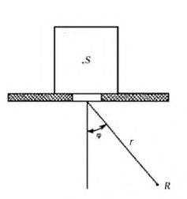
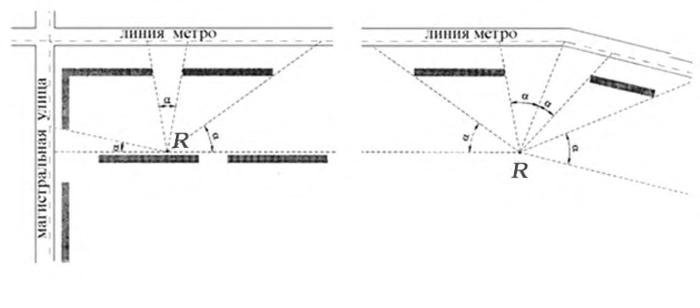
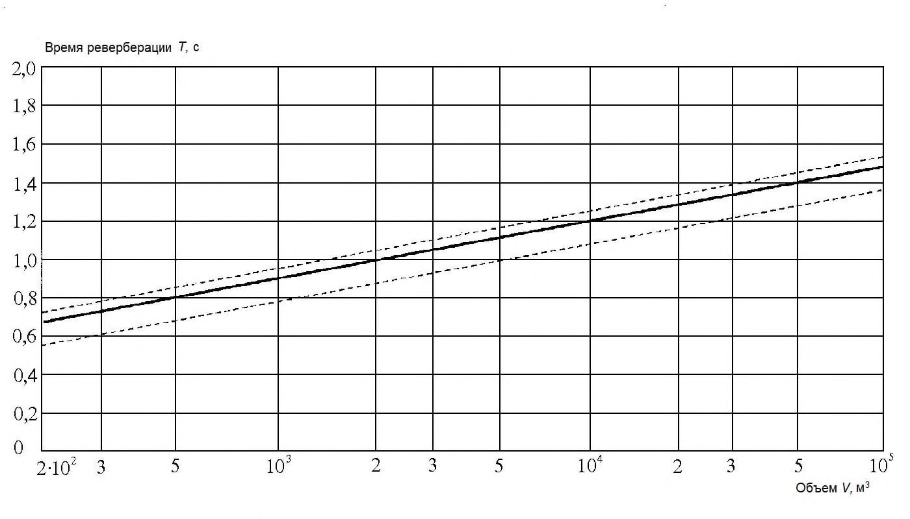
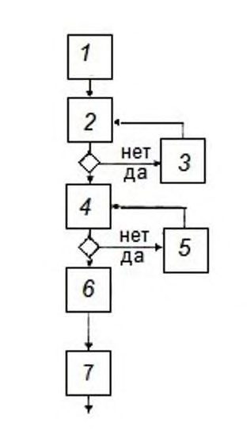
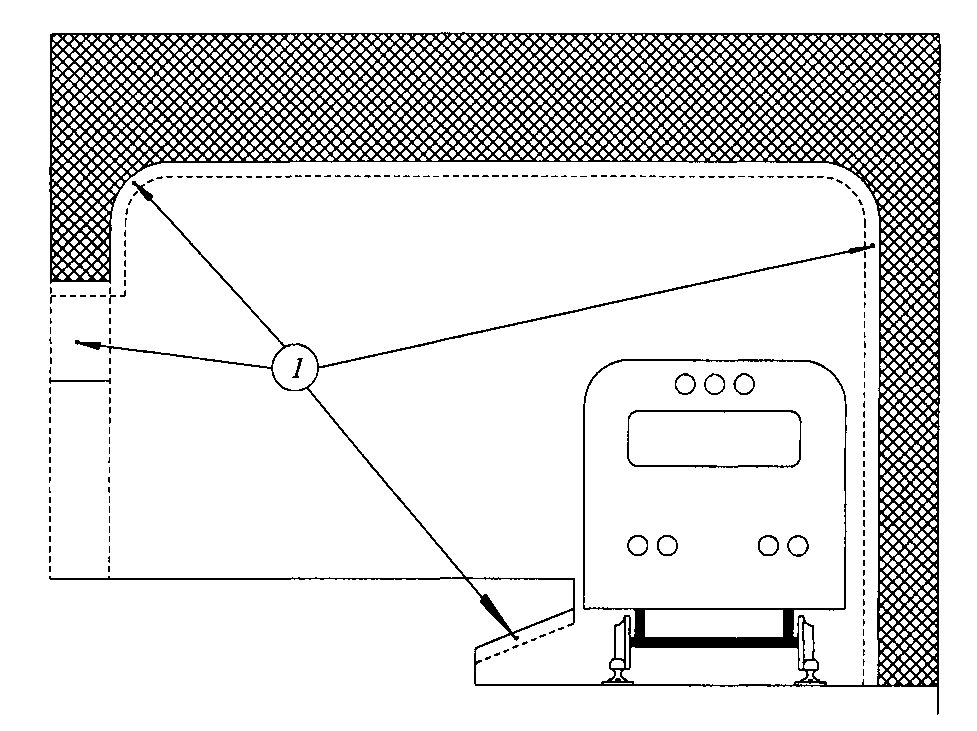

СП 353.1325800.2017 «Защита от шума объектов метрополитена. Правила проектирован»
О документе: разработчики, утверждение, регистрация, ключевые слова
СВОД ПРАВИЛ СП 353.1325800.2017
Издание официальное
- 1 ИСПОЛНИТЕЛЬ -федеральное государственное бюджетное учреждение «Научно-исследовательский институт строительной физики Российской академии архитектуры и строительных наук» (НИИСФ РААСН)
- 2 ВНЕСЕН Техническим комитетом по стандартизации ТК 465 «Строительство»
- 3 ПОДГОТОВЛЕН к утверждению Департаментом градостроительной деятельности и архитектуры Министерства строительства и жилищно-коммунального хозяйства Российской Федерации (Минстрой России)
- 4 УТВЕРЖДЕН приказом Министерства строительства и жилищнокоммунального хозяйства Российской Федерации от 14 ноября 2017 г. № 1540/пр и введен в действие с 15 мая 2018 г.
- 5 ЗАРЕГИСТРИРОВАН Федеральным агентством по техническому регулированию и метрологии (Росстандарт)
- 6 ВВЕДЕН ВПЕРВЫЕ
В случае пересмотра (замены) или отмены настоящего свода правил соответствующее уведомление будет опубликовано в установленном порядке. Соответствующая информация, уведомление и тексты размещаются также в информационной системе общего пользования - на официальном сайте разработчика (Минстрой России) в сети Интернет
© Минстрой России, 2017
Настоящий свод правил на может быть полностью или частично воспроизведен, тиражирован и распространен в качестве официального издания на территории Российской Федерации без разрешения Минстроя России
Дата введения 2018-05-15
УДК 69+628.517.2 (083.75)
ОКС 17.140.01
УДК 534.835.46
140.20
УДК 534.836.2
140.30
Ключевые слова: метрополитен, поезд метро, вестибюль станции метрополитена, шум, защита, источник шума, акустический расчет, электроакустический расчет, снижение шума, проектирование, строительство, эксплуатация, архитектурно-планировочное мероприятие, строительно-акустическое мероприятие, звукоизоляция, ограждающая конструкция, звукоизолирующий кожух, звукопоглощающая конструкция, акустический экран
Директор Научно исследовательского института строительной Физики Российской академии архитектуры и строительных наук, д.т.н.
Исполнители:
| главный научный сотрудник лаборатории №34 д.т.н. | И.Е. Цукерников |
|---|---|
| ведущий научный сотрудник лаборатории 34 д.т.н. | Т.О. Невенчанная |
| главный научный сотрудник лаборатории №42 к.т.н. | В.Н. Сухов |
| ведущий научный сотрудник лаборатории 42 к.т.н. | Х.А. Щиржецкий |
И.Л. Шубин
Введение
Настоящий свод правил разработан в развитие Федерального закона от 30 декабря 2009 г. № 384-ФЗ «Технический регламент о безопасности зданий и сооружений».
Настоящий свод правил распространяется на источники шума, используемые при строительстве, реконструкции, капитальном ремонте и эксплуатации объектов метрополитена.
Настоящий свод правил устанавливает также правила акустического проектирования станций метрополитенов для обеспечения акустического комфорта в подземных вестибюлях и на платформах и правила контроля шума, создаваемого в помещениях жилых и общественных зданий при движении поездов в метрополитенах, осуществляемого при приемке в эксплуатацию новых линий.
Настоящий свод правил разработан авторским коллективом НИИСФ РААСН (д-р техн. наук И.Л. Шубин , д-р техн. наук И.Е. Цукерников - разделы 1-4, 6, приложения А-В, Ж; д-р техн. наук Т.О. Невенчанная - раздел 4; канд. техн. наук В.Н. Сухов , канд. техн. наук Х.А. Щиржецкий - разделы 2, 5, приложения Г-Е; инж. С.Г. Воробьев ).
1Область применения
Настоящий свод правил распространяется на источники шума, используемые при строительстве, реконструкции, капитальном ремонте и эксплуатации объектов метрополитенов.
Настоящий свод правил устанавливает требования к проектированию, строительству и эксплуатации с целью защиты от шума объектов метрополитена, выполнения акустических расчетов по оценке степени шумового дискомфорта на селитебной территории, расположенной в окрестности объектов метрополитенов, и разработке мероприятий для обеспечения допустимых уровней шума, регламентируемых санитарными нормами.
2Нормативные ссылки
В настоящем своде правил использованы нормативные ссылки на следующие документы:
ГОСТ 12.2.016.1 -91 Система стандартов безопасности труда. Оборудование компрессорное. Определение шумовых характеристик. Общие требования
ГОСТ 11214 -2003 Блоки оконные деревянные с листовым остеклением. Технические условия
ГОСТ 17187 -2010 (IEC 61672-1:2002). Шумомеры. Часть 1. Технические требования
ГОСТ 20444 -2014 Шум. Транспортные потоки. Методы определения шумовой характеристики
ГОСТ 23337 -2014 Шум. Методы измерения шума на селитебной территории и в помещениях жилых и общественных зданий
ГОСТ 23941 -2002 Шум машин. Методы определения шумовых характеристик. Общие требования
ГОСТ 24699 -2002 Блоки оконные деревянные со стеклами и стеклопакетами. Технические условия
ГОСТ 25902 -2016 Залы зрительные. Метод определения разборчивости речи
ГОСТ 28975 -91 (ИСО 6395 -88) Акустика. Измерение внешнего шума, излучаемого землеройными машинами. Испытания в динамическом режиме
ГОСТ 30691 -2001 (ИСО 4871-96) Шум машин. Заявления и контроль шумовых характеристик
ГОСТ 31295.2-2005 (ИСО 9613-2:1996) Шум. Затухание звука при распространении на местности. Часть 2. Общий метод расчета
ГОСТ 31296.1 -2005 (ИСО 1996-1:2003) Шум. Описание, измерение и оценка шума на местности. Часть 1. Основные величины и процедуры оценки
ЗАЩИТА ОТ ШУМА ОБЪЕКТОВ МЕТРОПОЛИТЕНА. Правила проектирования, строительства и эксплуатации
Noise protection of metro units. Regulations for designing, construction and operation
ГОСТ 31296.2 -2006 (ИСО 1996 -2:2007) Шум. Описание, измерение и оценка шума на местности. Часть 2. Определение уровней звукового давления
ГОСТ 31326 -2006 (ИСО 15667:2000) Шум. Руководство по снижению шума кожухами и кабинами
ГОСТ 31352 -2007 (ИСО 5136:2003) Шум машин. Определение уровней звуковой мощности, излучаемой в воздуховод вентиляторами и другими устройствами перемещения воздуха, методом измерительного воздуховода
ГОСТ 31353.2 -2007 (ИСО 13347 -2:2004) Шум машин. Вентиляторы промышленные. Определение уровней звуковой мощности в лабораторных условиях. Часть 2. Реверберационный метод
ГОСТ 33325 -2015 Шум. Методы расчета уровней внешнего шума, излучаемого железнодорожным транспортом
ГОСТ 33329 -2015 Экраны акустические для железнодорожного транспорта. Технические требования
ГОСТ Р 53187 -2008 Акустика. Шумовой мониторинг городских территорий
- ГОСТ Р ИСО 3382-1 -2013 Акустика. Измерение акустических параметров помещений. Часть 1. Зрительные залы
- СП 51.13330.2011 «СНиП 23-03-2003 Защита от шума»
- СП 120.13330.2012 «СНиП 32-02-2003 Метрополитены» (с изменениями № 1, № 2)
- СП 254.1325800.2016 Здания и территории. Правила проектирования защиты от производственного шума
- СП 271.1325800.2016 Системы шумоглушения воздушного отопления, вентиляции и кондиционирования воздуха. Правила проектирования
СП 276.1325800.2016 Здания и территории. Правила проектирования защиты от шума транспортных потоков
Примечание - При пользовании настоящим сводом правил целесообразно проверить действие ссылочных документов в информационной системе общего пользования -на официальном сайте федерального органа исполнительной власти в сфере стандартизации в сети Интернет или по ежегодному информационному указателю «Национальные стандарты», который опубликован по состоянию на 1 января текущего года, и по выпускам ежемесячного информационного указателя «Национальные стандарты» за текущий год. Если заменен ссылочный документ, на который дана недатированная ссылка, то рекомендуется использовать действующую версию этого документа с учетом всех внесенных в данную версию изменений. Если заменен ссылочный документ, на который дана датированная ссылка, то рекомендуется использовать версию этого документа с указанным выше годом утверждения (принятия). Если после утверждения настоящего свода правил в ссылочный документ, на который дана датированная ссылка, внесено изменение, затрагивающее положение, на которое дана ссылка, то это положение рекомендуется применять без учета данного изменения. Если ссылочный документ отменен без замены, то положение, в котором дана ссылка на него, рекомендуется применять в части, не затрагивающей эту ссылку. Сведения о действии сводов правил целесообразно проверить в Федеральном информационном фонде стандартов.
3Термины и определения
В настоящем своде правил применены термины по СП 51.13330, ГОСТ Р 53187, ГОСТ 31296.1, СП 120.13330.
4Акустические расчеты и выбор мероприятий по снижению шума на селитебной территории от источников, расположенных на наземных объектах метрополитенов
4.1Общие положения
- поезда метрополитенов:
- вентиляционное оборудование и компрессоры;
- технологическое оборудование;
- площадки погрузо-разгрузочных работ;
- строительные машины и механизмы;
- автотранспорт.
По характеру изменения во времени шумы подразделяют на постоянные и непостоянные, в зависимости от того, изменяется ли уровень звука за время наблюдения не более или более чем на 5 дБ А при измерениях на временной характеристике «медленно» шумомера. К постоянным шумам могут быть отнесены, например, шумы вентиляционных систем, компрессоров, трансформаторов, к непостоянным шумам - шумы автомобильного и железнодорожного транспорта, землеройных машин, подъемных механизмов и т. п.
- для постоянного шума - уровни звукового давления L , дБ, в октавных полосах со среднегеометрическими частотами 31,5; 63; 125; 250; 500; 1000; 2000; 4000; 8000 Гц. Для ориентировочной оценки допускается использовать уровни звука LА , дБ А ;
- для непостоянного шума - эквивалентные уровни звука LА экв, дБ А , и максимальные уровни звука LА макс, дБ А . В СП 51.13330 установлены также допустимые эквивалентные уровни звукового давления L экв, дБ, проникающего шума в указанных выше октавных полосах частот.
- пропорциональные помещения разного объема без акустического разделения центрального вестибюля и посадочных платформ;
- пропорциональные помещения с разделением общего объема станции на систему связанных акустических объемов;
- диспропорциональные помещения с разной формой потолков (плоские или сводчатые), с единым акустическим объемом;
- диспропорциональные помещения с разной формой потолков и акустическим разделением общего объема станции на центральный и боковые объемы;
- закрытые и полузакрытые станции в уровне посадочных платформ.
- в источниках шума конструктивными методами (создание и применение малошумных агрегатов и экипажей);
- административными методами (регламентация времени работы источников шума);
- на пути распространения шума от источника до объектов шумозащиты архитектурно-планировочными и строительно-акустическими методами и средствами.
Настоящий свод правил рассматривает средства снижения шума на пути его распространения.
где L сум i - суммарный уровень звукового давления в i -й октавной полосе частот в расчетной точке (измеренный или рассчитанный), дБ, вычисляемый по формуле
где N - число одновременно работающих источников шума;
Lij - уровень звукового давления в i -й октавной полосе от j -го источника шума, дБ;
L доп i - допустимый уровень звукового давления на защищаемом объекте в i -й октавной полосе, дБ.
Оценку соответствия шумового режима Δ LA сум.тр нормативным требованиям допускается выполнять по формуле
где LA сум - суммарный уровень звука от источников шума в расчетной точке, дБ А ;
LA доп - допустимый уровень звука на защищаемом объекте, дБ А .
Суммарный уровень звука LA сум измеряют или рассчитывают по суммарным уровням звукового давления в октавных полосах частот L сум i по формуле
где Ai - значение частотной характеристики А шумомера на среднегеометрической частоте ( f сг ) iй октавной полосы, дБ, принимаемое согласно ГОСТ 17187 по таблице 4.1.
Таблица 4.1 Частотная характеристика А шумомера
| i | 1 | 2 | 3 | 4 | 5 | 6 | 7 | 8 |
|---|---|---|---|---|---|---|---|---|
| f сг , Гц | 63 | 125 | 250 | 500 | 1000 | 2000 | 4000 | 8000 |
| A i , дБ | -26,2 | -16,1 | -8,6 | -3,2 | 0 | +1,2 | +1,0 | -1,1 |
Примечания
- 1 Отрицательное значение величин L сум.тр i , LА сум.тр характеризует удовлетворение допустимых уровней шума в расчетной точке, положительное - соответствует требуемому снижению уровней шума, которое может быть достигнуто снижением излучаемого источниками шума или повышением шумозащитных качеств средств, препятствующих распространению шума.
2 Оценка уровня звукового давления в октавной полосе со среднегеометрической частотой 31,5 Гц не проводится [2].
где L A экв.сум , L A макс - общий эквивалентный и максимальный уровни звука в расчетной точке, дБ А ;
L A экв.доп , L A макс.доп - допустимые эквивалентный и максимальный уровни звука в расчетной точке, дБ А, определяемые по 4.1.3.
Общий эквивалентный уровень звука определяют энергетическим сложением суммарного уровня звука L A сум от источников постоянного шума, определенного по формулам (4.2), (4.4), и суммарного эквивалентного уровня звука L A экв.сум от источников непостоянного шума, дБ А , по формуле
При этом вначале определяют суммарный уровень по формуле (4.2), а затем выполняют коррекцию А по формуле (4.4).
Суммарный эквивалентный уровень звука от источников непостоянного шума рассчитывают по формуле
где N' - число источников непостоянного шума, работающих в течение времени оценки шумового воздействия (16 ч днем, 8 ч ночью);
LА экв j - эквивалентный уровень звука j -го источника непостоянного шума, определяемый как среднее по интенсивности его значение за время оценки по формуле
где т - число интервалов с различными значениями уровня звука на интервале времени оценки ;
k - длительность интервала с уровнем звука L k Aj , ч.
Требуемое снижение шума следует определять отдельно для каждого источника из групп однотипных источников шума.
Примечание - Однотипными считают источники, для которых в рассматриваемой расчетной точке установлены одинаковые значения допустимых уровней шума (например, вентиляторы).
Требуемое снижение шума Δ L тр i определяют для уровней звукового давления в расчетных точках.
Если группа однотипных источников содержит источники шума, уровни звукового давления в расчетной точке от которых различаются более чем на 10 дБ, такую группу разбивают на две подгруппы: подгруппу источников шума, уровни звукового давления от которых в рассматриваемой расчетной точке не более чем на 10 дБ отличаются от наибольшего уровня звукового давления в данной расчетной точке и подгруппу остальных источников шума с более низкими уровнями звукового давления.
Для каждого из источников шума первой подгруппы требуемое снижение шума, создаваемое в расчетной точке i -м источником Δ L тр i , вычисляют по формуле
где Li - уровень звукового давления, дБ, создаваемый в расчетной точке i L доп - допустимый уровень звука на защищаемом объекте, дБ; n 1 - число источников шума в первой подгруппе.
Для каждого источника шума второй подгруппы требуемое снижение шума вычисляют по формуле
где n - общее число принимаемых в расчет источников шума.
- м источником;
В n не следует включать источники шума, создающие в расчетной точке уровни звукового давления ниже допустимых на Δ L 0, определяемое по формуле
где mn - число источников шума, уровни звукового давления которых, по крайней мере, на 10 дБ менее L доп.
Примечание - В случаях, если для источников, создающих в расчетной точке более низкие уровни звукового давления, получаются большие значения требуемого снижения шума, следует в принятой схеме разбиения источников на две группы рассчитать суммарный уровень звукового давления в расчетной точке с учетом найденных значений требуемого снижения шума отдельных источников и откорректировать полученные данные.
4.2Выбор расчетных точек
- для зданий и сооружений - в 2 м от наружных ограждающих стен на высоте 1,5 м от пола первого и последнего этажей;
- для территорий - не менее чем в 2 м от стен окружающих зданий и сооружений на высоте 1,5 м от поверхности земли и на высоте середины окон верхних этажей зданий;
- для помещений - в 2 м от окна на высоте 1,5 м от поверхности пола.
- расстояние от защищаемых от шума объектов до границы территории объекта метрополитена;
- расположение наиболее интенсивных источников шума на территории объекта и фактор направленности их излучения;
- наличие экранирующих зданий и сооружений на пути распространения шума;
- назначение защищаемых от шума объектов.
- а) точку, привязанную к защищаемому от шума объекту, ближайшему к границе территории объекта метрополитена;
- б) точки, привязанные к защищаемым от шума объектам, ближайшим к наиболее интенсивным, неэкранируемым источникам шума;
- в) точки, привязанные к ближайшим к объекту метрополитена, защищаемым от шума объектам, к которым предъявляются более жесткие требования на допустимый уровень шума, чем выбранные в соответствии с перечислениями а), б).
4.3Расчет ожидаемых уровней шума от стационарных объектов
4.3.1 Исходные данные
- 4.3.1.1 Для расчета ожидаемых уровней шума в расчетных точках необходимы следующие исходные материалы:
- а) ситуационный план территории объекта метрополитена со всеми зданиями и сооружениями и прилегающей застройкой;
- б) перечень, спецификация и шумовые характеристики оборудования, являющегося источниками шума объекта метрополитена;
- в) местоположение установки шумного оборудования и наружных отверстий вентиляционных систем и углы между нормалями к наружным ограждениям, за которыми находится это оборудование (нормалями к наружным отверстиям вентиляционных систем), и направлениями в расчетную точку (рисунок 4.1);
- г) высота и ширина экранирующих зданий и сооружений - для оценки величины снижения уровней звука за счет экранирования;
- д) характер и периоды работы шумного оборудования.

S - источник шума; R - расчетная точка; r - расстояние от ограждения до расчетной точки; 1 - помещение; 2 - окно; 3 - наружное ограждение
Рисунок 4.1 - Схема для определения угла φ между нормалью к наружному ограждению и направлением в расчетную точку
- 4.3.1.2 В соответствии с требованиями СП 51.13330 шумовыми характеристиками технологического и инженерного оборудования являются уровни звуковой мощности LW (для источников постоянного шума), эквивалентные LW экв и максимальные LW макс уровни звуковой мощности (для источников непостоянного шума) в восьми октавных полосах нормируемого диапазона со среднегеометрическими частотами 63-8000 Гц. Эти характеристики должны содержаться в технической документации на оборудование и прилагаться к разделу проекта «Защита от шума» рассматриваемого объекта метрополитена.
Примечание - Шумовые характеристики источников шума заявляет завод-изготовитель оборудования в прилагаемой технической документации по ГОСТ 30691. В некоторых случаях требуемые шумовые характеристики источников шума могут быть получены расчетным путем (например, по заявленным уровням звука излучения и/или октавным уровням звукового давления излучения в контрольных точках), а также в результате измерений, выполненных на аналогичном оборудовании в соответствии с общими методами, установленными ГОСТ 23941, или специальными методами, установленными стандартами на конкретные виды оборудования (например, ГОСТ 12.2.016.1 - для компрессорного оборудования, ГОСТ 31352 и ГОСТ 31353.2 - для вентиляционного оборудования, ГОСТ 28975 - для землеройных машин).
Для действующих стационарных объектов метрополитена в качестве исходных данных допускается использовать результаты измерений уровней звукового давления в октавных полосах частот, выполненных внутри помещений с технологическим оборудованием в 2 м от элементов ограждающих поверхностей с наименьшей звукоизоляцией (окна, двери) при работе не менее 70 % оборудования, эксплуатируемого в помещении.
- 4.3.1.3 Шумовые характеристики вентиляторов, при необходимости, допускается определять расчетом. Для выполнения расчета необходимы следующие исходные данные: номер вентилятора, его КПД, частота вращения рабочего колеса и его диаметр в процентах от номинального, расход воздуха и напор его потока; для крышных вентиляторов окружная скорость и диаметр рабочего колеса.
Для определения уровней звуковой мощности шума, излучаемого из заборных и выбросных отверстий приточных и вытяжных систем вентиляции, необходимы также сведения о путевой арматуре и элементах воздуховодов: общая длина воздуховода от вентилятора до заборного или выбросного отверстия, размеры его поперечного сечения, количество и характер поворотов и разветвлений воздуховодов, наличие фасонных элементов (отводы, тройники, крестовины), шиберов, дроссель-клапанов, глушителей шума, тип распределительных устройств (нерегулируемые и регулируемые решетки, плафоны, анемостаты, устройства на основе конических сопел).
Расчет шумовых характеристик вентиляторов и уровней звуковой мощности шума, излучаемого из заборных и выбросных отверстий систем вентиляции, следует выполнять в соответствии с СП 271.1325800.
4.3.2 Этапы расчета
Акустический расчет состоит из следующих основных этапов:
- а) выявление источников шума и предварительное ранжирование их по уровню излучаемой звуковой мощности;
- б) выбор расчетных точек;
- г) определение уровней шума в расчетных точках;
- д) определение требуемого снижения уровней шума в расчетных точках.
После выполнения акустического расчета выбирают конкретные мероприятия для обеспечения требуемого снижения уровней шума в расчетных точках. Проводят выбор типа и размера звукопоглощающих, звукоизолирующих конструкций (звукоизолирующих кожухов, звукопоглощающих облицовок и конструкций, акустических экранов), а затем выполняют проверочный расчет снижения уровней шума в расчетных точках.
4.3.3 Расчет уровней звукового давления
- 4.3.3.1 Уровень звукового давления в октавных полосах частот в расчетной точке на территории застройки рассчитывают в соответствии с методом, установленным ГОСТ 31295.2.
- 4.3.3.2 При источнике шума, расположенном открыто, уровень звукового давления в i -й полосе частот Li в расчетной точке вычисляют по формуле
где LWi - уровень звуковой мощности источника шума в i -й октавной полосе частот, дБ;
- Φ i - фактор направленности источника шума в i -й октавной полосе частот (для ненаправленных источников Φ i = 1);
- Δ Li - изменение уровня звукового давления, дБ, в i -й октавной полосе частот на пути распространения звука от источника шума до расчетной точки.
Порядок определения значений шумовых характеристик источников шума установлен в 4.3.4.
Изменение уровня звукового давления в i -й октавной полосе частот Δ Li учитывает различные факторы, влияющие на интенсивность звука при распространении от источника до расчетной точки, и является суммой ряда слагаемых
где Δ L рас i - снижение уровня звукового давления в i -й октавной полосе в зависимости от расстояния между источником шума и расчетной точкой, связанное с расхождением звуковой волны в пространстве, дБ (затухание звука из-за геометрической дивергенции);
Δ L атм i - снижение уровня звукового давления в i -й октавной полосе, связанное с поглощением звука в атмосфере, дБ;
- Δ L гр i - изменение уровня звукового давления в i -й октавной полосе, вызываемое влиянием грунта, дБ;
Δ L экр i - снижение уровня звукового давления экранами, дБ;
Δ L зел i - снижение уровня звукового давления в i -й октавной полосе полосами зеленых насаждений, дБ;
Δ L отр i - влияние отражения звука от препятствий в i -й октавной полосе, дБ.
Значения слагаемых Δ L рас i , Δ L атм i , Δ L гр i , Δ L экр i , Δ L зел i следует рассчитывать по ГОСТ 31295.2 (аналогично слагаемым Adiv , Aatm , Agr , Abar , Afol ), Δ L отр i - по 4.3.3.3.
Примечания
1 Каждое слагаемое, входящее в формулу (4.14), рассчитывают в отдельности и таким образом, как будто остальные составляющие отсутствуют.
- 2 Слагаемые в формуле (4.14) являются положительными, если они приводят к снижению уровня звукового давления. В том случае, если уровень звукового давления увеличивается, то слагаемое должно иметь отрицательный знак.
4.3.3.3 Отражение звука от препятствий
Для препятствий, расположенных на расстоянии более 2 м от расчетной точки, Δ L отр i следует рассчитывать по ГОСТ 31295.2-2005 (подраздел 7.5). Для здания, в 2 м от поверхности которого расположена расчетная точка, в соответствии с ГОСТ 31296.2 допускается принимать Δ L отр i = 3 дБ (дБ А ).
- 4.3.3.4 Для источников шума, расположенных в помещениях, уровень звукового давления Li в октавных полосах частот в расчетной точке определяют по формуле (4.13). При этом необходимо заменить в ней уровень звуковой мощности LWi на уровень звуковой мощности LW пр i шума, прошедшего через наружные ограждения помещения с источниками шума (определяют по 4.3.4.2).
Вычисление значения 10 lgФ i в зависимости от угла между нормалью к наружному ограждению помещения с источниками шума и направлением в расчетную точку (см. рисунок 4.1) необходимо производить с помощью таблицы 4.2.
Таблица 4.2 Зависимость фактора направленности от угла
| , град | 0 | 45 | 90 | 135 | 180 |
|---|---|---|---|---|---|
| 10 lgФ, дБ | 0 | -3 | -5 | -10 | -15 |
Изменение уровня звукового давления Δ L рас i , Δ L атм i , Δ L гр i , Δ L экр i , Δ L зел i и Δ L отр i на пути распространения звука от наружных поверхностей помещения определяют по 4.3.3.2. При этом расстояния отсчитывают от наружных поверхностей помещений, а высоту источника шума hS берут на уровне середины элемента ограждения помещения с наименьшей звукоизоляцией (окна, открытой форточки, фрамуги или створки окна).
При отсутствии на пути распространения звука преград в виде экранов или полос зеленых насаждений принимают Δ L экр = 0 и Δ L зел = 0.
- 4.3.3.5 Если источником шума является воздухозаборное или выбросное отверстие систем, использующих вентиляторы или компрессоры, ожидаемые уровни звукового давления в расчетных точках Li вычисляют по формуле
где LWi - уровень звуковой мощности вентилятора в iй октавной полосе, дБ, определяемый по 4.3.4.3;
Δ LWi сети - суммарное снижение уровня звуковой мощности по пути распространения звука в воздуховоде в i -й октавной полосе, дБ, определяемое по 4.3.4.4;
Δ L н - показатель направленности излучения звука, дБ, определяемый по рисунку 4.2;
Δ Li - снижение уровня звукового давления, дБ, в i -ой октавной полосе частот на пути распространения звука от источника шума до расчетной точки, согласно формуле (4.14).

- а - шум излучается через вентиляционную решетку в стене здания; б - шум излучается открытым концом воздуховода на кровле; в - шум излучается через вентиляционную шахту на кровле
Рисунок 4.2 - Показатель направленности излучения шума через отверстия вентиляционных решеток, воздуховодов, шахт и подобных элементов
4.3.3.6 Уровень звукового давления в iй октавной полосе L п i шума, проникающего снаружи в защищаемое помещение, определяют по формуле
где Li - уровень звукового давления, дБ, в i -й октавной полосе снаружи у ограждения защищаемого от шума помещения, определяемый по формуле (4.13);
Ri - изоляция воздушного шума, дБ, наружным ограждением защищаемого от шума помещения в iй октавной полосе, определяемая по формуле (4.21) путем подстановки в нее значений параметров, соответствующих рассматриваемому ограждению;
S - площадь, м² , наружного ограждения, через которое шум проникает в защищаемое помещение;
S 0 = 1 м² ;
Bi - постоянная защищаемого от шума помещения в i -й октавной полосе, м² , определяемая по 4.3.4.2;
B 0 = 1 м² .
4.3.4 Шумовые характеристики источников шума
4.3.4.1 Значения уровней звуковой мощности LW (для источников постоянного шума), эквивалентных LW экв и максимальных LW макс уровней звуковой мощности (для источников непостоянного шума), а также показателя направленности Ф в восьми октавных полосах нормируемого диапазона принимают по данным, приводимым в сопроводительной технической документации на источник шума (см. 4.3.1.2). При отсутствии значений Ф в документации принимают Ф = 1.
Для оборудования систем кондиционирования, а также вентиляторов значения LW могут быть приняты по каталогам (документам) фирм-изготовителей.
4.3.4.2 В случае, если источник звука находится внутри помещения, уровень звуковой мощности LW пр i шума, прошедшего через наружные ограждения помещения, вычисляют по формуле
где L вн i - уровень звукового давления в i -й октавной полосе у наружного ограждения внутри помещения с источниками шума, дБ;
S ог - площадь наружного ограждения, м² ;
S 0 = 1 м² ;
Ri - изоляция воздушного шума наружным ограждением помещения в iй октавной полосе, дБ.
Уровень звукового давления в i -й октавной полосе у наружного ограждения внутри помещения с источниками шума L вн i , дБ, вычисляют по формуле
где LWki - уровень звуковой мощности k -го источника шума, расположенного внутри помещения, i -й октавной полосе, дБ; n - число источников шума в помещении;
B
0 = 1 м
;
Bi - постоянная помещения в i -ой октавной полосе, м² , вычисляемая по формуле
где B 1000 - постоянная помещения в октавной полосе со среднегеометрической частотой 1000 Гц, м² , определяемая по таблице 4.3 в зависимости от объема V , м³ , и типа помещения; μ i - частотный множитель, определяемый по таблице 4.4.
Примечание -Если длина помещения более чем в 5 раз превышает его ширину или высоту, постоянную помещения B 1000 рекомендуется определять по таблице 4.3 в зависимости от значения воображаемого объема V́ , определяемого по формуле
где h - меньший размер помещения, м; b - второй по величине размер помещения, м.
Таблица 4.3 Постоянная помещения B 1000
| Тип помещения | Описание | B 1000 |
|---|---|---|
| 1 | Металлообрабатывающие мастерские, вентиляционные камеры, генераторные и машинные залы и т. п. | V /20 |
| 2 | Лаборатории, деревообрабатывающие мастерские и т. п. | V /10 |
Таблица 4.4 Частотный множитель μ i
| Объем помещения V , м³ | Частотный множитель μ i , для среднегеометрических частот октавных полос, Гц | Частотный множитель μ i , для среднегеометрических частот октавных полос, Гц | Частотный множитель μ i , для среднегеометрических частот октавных полос, Гц | Частотный множитель μ i , для среднегеометрических частот октавных полос, Гц | Частотный множитель μ i , для среднегеометрических частот октавных полос, Гц | Частотный множитель μ i , для среднегеометрических частот октавных полос, Гц | Частотный множитель μ i , для среднегеометрических частот октавных полос, Гц | Частотный множитель μ i , для среднегеометрических частот октавных полос, Гц |
|---|---|---|---|---|---|---|---|---|
| Объем помещения V , м³ | 63 | 125 | 250 | 500 | 1000 | 2000 | 4000 | 8000 |
| Менее 200 | 0,8 | 0,75 | 0,7 | 0,8 | 1 | 1,4 | 1,8 | 2,5 |
| 200 - 1000 | 0,65 | 0,62 | 0,64 | 0,75 | 1 | 1,5 | 2,4 | 4,2 |
| Свыше 1000 | 0,5 | 0,5 | 0,55 | 0,7 | 1 | 1,6 | 3 | 6 |
Изоляцию воздушного шума наружным ограждением Ri определяют по формуле
где S ок , R ок i - площадь, м² , и изоляция, дБ, воздушного шума для окон в i -й октавной полосе; S дв , R дв i - то же для дверей;
S ст , R ст i - то же для сплошной части наружного ограждения (стены);
S ф - площадь открытой части форточки (фрамуги);
S 1 = 1 м² .
При выполнении наружных ограждений из традиционных строительных материалов (кирпич, бетон и т. п. материалов, применяемых для отапливаемых помещений) R допускается определять по формуле (4.21) без учета члена S ст ∙ 10 -0,1 R ст i .
Изоляцию воздушного шума окном с открытой форточкой или фрамугой принимают равной 10 дБ.
Допускается выполнение расчета L вн i в соответствии с СП 254.1325800.
Для действующих объектов метрополитена значения L вн i следует определять посредством измерений, выполняемых в соответствии с 4.3.1.2 (см. примечание).
4.3.4.3 При необходимости значения уровня звуковой мощности LWi , дБ, вентилятора, излучаемой в присоединяемые воздуховоды всасывания и нагнетания, рассчитывают по его критерию шумности (или на основе удельных уровней звуковой мощности) и аэродинамическим параметрам в соответствии с СП 271.1325800. В соответствии с СП 271.1325800 следует рассчитывать также шумовые характеристики путевой арматуры систем и элементов воздуховодов: прямых участков, фасонных элементов круглого или прямоугольного сечения, шиберов и дроссель-клапанов, воздухораспределительных устройств.
Значения уровня звуковой мощности вентилятора в iй октавной полосе частот LWi , дБ, излучаемой в окружающее пространство через стенки корпуса вентилятора, вычисляют по формуле
где L к.ш - критерий шумности, дБ, определяемый в зависимости от типа и конструкции вентилятора в соответствии с СП 271.1325800.2016 (приложение А);
PV - полное давление (напор), создаваемое вентилятором, Па;
Q - объемный расход воздуха вентилятора, м³ /с;
Δ L 1 i - поправка, дБ, учитывающая распределение LWi по октавным полосам частот, дБ, определяемая в зависимости от типа и частоты вращения рабочего колеса вентилятора в соответствии с СП 271.1325800.2016 (пункт 6.3.2, таблица 6.1);
Δ L реж - поправка на режим работы вентилятора, дБ, в зависимости от КПД вентилятора, определяемая по таблице 4.5;
P 0 = 10 Па;
Таблица 4.5 Поправка Δ L реж на режим работы вентилятора
| КПД | η макс | 0,9 η макс | 0,8 η макс | 0,7 η макс | 0,6 η макс | 0,4 η макс |
|---|---|---|---|---|---|---|
| Δ L реж , дБ | 0 | 1 | 4 | 6 | 7 | 8 |
Значения уровня звуковой мощности LWi , дБ, крышного вентилятора, излучаемой открытым патрубком или через стенки корпуса, вычисляют по формуле
где L ̅ - отвлеченный уровень, дБ, определяемый в зависимости от типа и конструкции вентилятора по таблице 4.6; u - окружная скорость рабочего колеса, м/с;
D - диаметр рабочего колеса, м;
Δ L 1 i - поправка, учитывающая распределение LWi по октавным полосам частот, дБ, определяемая в зависимости от типа и частоты вращения рабочего колеса вентилятора по таблице 4.7; u 0 = 1 м/с;
D 0 = 1 м.
Таблица 4.6 Отвлеченный уровень L ̅
| Вентилятор | Отвлеченный уровень L , дБ, для сторон | Отвлеченный уровень L , дБ, для сторон |
|---|---|---|
| нагнетания | всасывания | |
| Радиальный (центробежный) | 28 | 32 |
| Осевой | 19 | 19 |
Таблица 4.7 Поправка Δ L 1 i , учитывающая распределение уровня звуковой мощности по октавным полосам частот для крышных вентиляторов
| Вентилятор | Вентилятор | Поправка Δ L 1 i , дБ, при среднегеометрических частотах октавных полос, Гц | Поправка Δ L 1 i , дБ, при среднегеометрических частотах октавных полос, Гц | Поправка Δ L 1 i , дБ, при среднегеометрических частотах октавных полос, Гц | Поправка Δ L 1 i , дБ, при среднегеометрических частотах октавных полос, Гц | Поправка Δ L 1 i , дБ, при среднегеометрических частотах октавных полос, Гц | Поправка Δ L 1 i , дБ, при среднегеометрических частотах октавных полос, Гц | Поправка Δ L 1 i , дБ, при среднегеометрических частотах октавных полос, Гц | Поправка Δ L 1 i , дБ, при среднегеометрических частотах октавных полос, Гц |
|---|---|---|---|---|---|---|---|---|---|
| тип | частота вращения, об/мин | 63 | 125 | 250 | 500 | 1000 | 2000 | 4000 | 8000 |
| Радиальный | 400-480 | 5 | 4 | 8 | 10 | 16 | 23 | 28 | 33 |
| Осевой | 720-920 1370-1400 | 7 9 | 6 7 | 6 6 | 9 6 | 12 9 | 16 13 | 21 17 | 29 23 |
- 4.3.4.4 В соответствии с СП 271.1325800 снижение уровней звуковой мощности источников шума, например, вентилятора или дросселя, при прохождении по воздуховодам определяют последовательно для каждого элемента сети и затем суммируют. Следует иметь в виду, что даже в акустически не обработанных элементах систем собственное затухание обычно весьма значительное и его необходимо учитывать.
Суммарное снижение уровней звуковой мощности, Δ LWi сети по пути распространения звука в воздуховоде в iой октавной полосе определяют по формуле
где Δ L ( k ) Wi - снижение уровней звуковой мощности вентилятора в k -м элементе воздуховода в i -й октавной полосе, дБ; nc - число элементов сети воздуховода от вентилятора до наружного отверстия.
В число элементов, оказывающих существенное влияние на затухание звука при распространении его в сети воздуховода включают следующие элементы: прямые участки воздуховода, повороты, изменение поперечного сечения воздуховода, разветвление сети, отражение от открытого конца воздуховода. Расчет снижения уровней звуковой мощности Δ L ( k ) Wi от указанных элементов сети воздуховода, а также в элементах вентиляционных установок (в фильтрах, секциях увлажнения, подогрева или охлаждения) следует выполнять в соответствии с СП 271.1325800.
4.4Расчет ожидаемых уровней звука от движущихся объектов
Для выполнения расчета ожидаемых уровней шума в расчетных точках в качестве дополнительных шумовых характеристик потоков транспорта определяют эквивалентные и максимальные уровни звукового давления в октавных полосах частот со среднегеометрическими частотами 63-8000 Гц в указанных опорных точках, рассчитываемые из соответствующих значений уровня звука с помощью относительных спектров, принимаемых для видов транспорта по СП 276.1325800 и 4.4.8.
Допускается расчет ожидаемых уровней шума в расчетных точках от движущихся объектов выполнять по ГОСТ 31295.2.
- для традиционного метро
- для легкого метро
где vk - скорость движения поезда с вагонами kго типа, км/ч; l k - длина поезда с вагонами kго типа, м; v 0 = 1 км/ч.
Примечания
- 1 Формула (4.25) получена посредством перехода от модели бесконечного линейного источника к модели источника конечной длины, равной длине поезда метро.
- 2 Формулы (4.27), (4.28) получены применением процедуры линейной регрессии к результатам измерений эквивалентных уровней опытного образца легкого метро.
- 3 Для поездов метрополитена, имеющих длину 160 м, слагаемые ( ) ( ) ( ) ( ) 2 25 ln 1 12,5 25 10lg arctg k k k l l l + -= 0,5 дБ и ( ) ( ) 50 10lg arctg k l = 1 дБ, и формулы (4.25), (4.26) принимают вид:
4 Для поездов на линии легкого метро и имеющих длину 84 м слагаемые ( ) ( ) ( ) ( ) 2 25 ln 1 12,5 25 10lg arctg k k k l l l + -= 0,7 дБ и ( ) ( ) 50 10lg arctg k l = 0,1 дБ, и формулы (4.27), (4.28) принимают вид:
При проходе по мосту или эстакаде шум, генерируемый поездом, выше, чем при проходе по обычному пути. В этом случае к рассчитанному эквивалентному уровню звука следует прибавить коррекцию L м, зависящую от типа моста (эстакады) и определяемую по таблице 4.8.
Таблица 4.8 Коррекция L м на тип моста (эстакады)
| Тип моста | Коррекция, дБ А |
|---|---|
| Стальной мост | 10 |
| Стальной мост с балластным слоем | 5 |
| Стальной мост с балластным слоем и подбаластным матом | 3 |
| Армированный бетонный мост с балластным слоем и подбаластным матом | 0 |
| Армированный бетонный мост с бетонными опорами | 0 |
где L k A экв, jl - эквивалентный уровень звука, дБ А , создаваемый на расстоянии 25 м от оси ближнего пути j -м поездом с вагонами kго типа, проходящим в течение l -го часа (рассчитывают по формулам (4.25) и (4.27); n k l - число поездов с вагонами kго типа, проходящих по рассматриваемому участку пути, в течение l -го часа; t jl - время следования каждого поезда по рассматриваемому участку пути в течение l -го часа, с.
Часовой эквивалентный уровень звука LA экв25,1ч, l , создаваемый на расстоянии 25 м от оси ближнего пути потоками поездов метро с вагонами всех типов, прошедших по рассматриваемому участку пути в течение l -го часа, вычисляют по формуле
где n - число поездов с вагонами различных типов, проходящих по рассматриваемому участку пути, в течение l -го часа.
где TR -время оценки, ч, принимаемое в соответствии с [1] равным 16 ч ( nR = 16) для дня и 8 ч ( nR = 8) для ночи; t l = 1 ч.
Примечание - При необходимости выделения вечернего времени следует рассматривать три временных интервала оценки шума за сутки в соответствии с ГОСТ Р 53187.
где L 25 i - эквивалентный или максимальный уровень звукового давления отдельных поездов ( L экв25 i , L макс25 i ) или потоков поездов для часового ( L экв25 i ,1ч, l , i ) и оценочного интервалов времени ( L экв25, R,i , L макс25, R,i ) в i -й октавной полосе, дБ;
LA 25 - эквивалентный или максимальный уровень звука отдельных поездов ( LA экв25, LA макс25) и потоков поездов для часового ( LA экв25,1ч, l ,) и оценочного ( LA экв25, R , LA макс25, R ) интервалов времени, определенные по 4.4.5-4.4.7, дБ А ;
отн i - значение относительного спектра в i -й октавной полосе частот, дБ.
Таблица 4.9 Относительные спектры шума потоков метропоездов
| Вид метро | Относительная частотная характеристика шума метропоездов ∆ отн i , дБ, в октавных полосах со среднегеометрическими частотами, Гц | Относительная частотная характеристика шума метропоездов ∆ отн i , дБ, в октавных полосах со среднегеометрическими частотами, Гц | Относительная частотная характеристика шума метропоездов ∆ отн i , дБ, в октавных полосах со среднегеометрическими частотами, Гц | Относительная частотная характеристика шума метропоездов ∆ отн i , дБ, в октавных полосах со среднегеометрическими частотами, Гц | Относительная частотная характеристика шума метропоездов ∆ отн i , дБ, в октавных полосах со среднегеометрическими частотами, Гц | Относительная частотная характеристика шума метропоездов ∆ отн i , дБ, в октавных полосах со среднегеометрическими частотами, Гц | Относительная частотная характеристика шума метропоездов ∆ отн i , дБ, в октавных полосах со среднегеометрическими частотами, Гц | Относительная частотная характеристика шума метропоездов ∆ отн i , дБ, в октавных полосах со среднегеометрическими частотами, Гц |
|---|---|---|---|---|---|---|---|---|
| Вид метро | 63 | 125 | 250 | 500 | 1000 | 2000 | 4000 | 8000 |
| Традиционное | -14,3 | -14,7 | -17,5 | -4,2 | -3,5 | -6,2 | -12,4 | -23,4 |
| Легкое | 6,5 | 0 | 0,6 | -1,5 | -5,8 | -9,6 | -14,2 | -21,0 |
Примечание - Оценка уровня звукового давления в октавной полосе со среднегеометрической частотой 31,5 Гц не проводится [2].
- где L экв25 i - эквивалентный уровень звукового давления в iй октавной полосе на расстоянии 25 м от оси ближнего к расчетной точке пути на высоте 1,5 м от головки рельса для отдельных поездов, определенный по 4.4.4 и 4.4.8, или потоков поездов ( LA экв25,1ч, l , LA экв25, R ), определенный по 4.4.5, 4.4.6 и 4.4.8 для часового и оценочного интервалов времени, дБ;
L рас i , L атм i , L гр i , L экр i , L зел i и L отр i - (см. формулу (4.14));
L α i - снижение уровня звукового давления вследствие ограничения угла видимости объекта из расчетной точки.
- где L макс25 i - максимальный уровень звукового давления в iй октавной полосе на расстоянии 25 м от оси ближнего к расчетной точке пути на высоте 1,5 м от головки рельса для отдельных поездов, определенный по 4.4.4 и 4.4.8, или потоков поездов, определенный по 4.4.7 и 4.4.8, дБ.
для максимальных уровней звука
где l ̅ - длина поезда или средняя длина поездов с вагонами различных типов, проходящих по рассматриваемому участку пути, м;
- R - минимальное расстояние до расчетной точки от оси ближнего пути, м.
- где - угол видимости неэкранированного участка линии метрополитена из расчетной точки, град (определяют по рисунку 4.3).
Рисунок 4.3 - Примеры разбивки территории в окрестности линии метрополитена на участки, отличающиеся по условиям распространения шума

При ориентировочных расчетах допускается определять значения эквивалентных и максимальных уровней звука без перехода к октавному спектру непосредственно по формулам (4.37), (4.38), подставляя в них вместо шумовых характеристик поездов и их потоков в октавных полосах частот L экв25 i и L макс25 i Акорректированные шумовые характеристики LA экв25 и LA макс25 и принимая значения входящих в них частотно зависимых величин для октавной полосы со среднегеометрической частотой 1000 Гц.
4.5Порядок подбора мероприятий по обеспечению требуемого снижения шума
- для вентиляционных систем, компрессорных, скрубберных и т. п. - установка глушителей шума в соответствии с разработанными рекомендациями и правилами, установленными СП 271.1325800 и 4.5.6. Кроме того для вентиляторов, устанавливаемых открыто (крышные, передвижные компрессоры и т. п.) дополнительно к глушителям шума - установка шумозащитных кожухов в соответствии с 4.5.7;
- для технологического оборудования - установка в здания с преимущественной ориентацией окон и дверей в сторону, противоположную направлениям в расчетные точки, а также использование шумозащитных конструкций окон и дверей (приложение А);
- для градирен, моечных площадок автотранспорта и другого открыто расположенного оборудования - установка шумозащитных экранов и выгородок со стороны селитебной территории по 4.5.8.
Конструкцию глушителя следует подбирать в зависимости от назначения системы, требуемого снижения уровня шума, размера воздуховода в месте установки глушителя, допустимой скорости воздуха и предельно допустимого гидравлического сопротивления в сети в соответствии с СП 271.1325800.2016 (приложение В).
Необходимую длину трубчатых и пластинчатых глушителей следует подбирать таким образом, чтобы значения акустической эффективности глушителя в октавных полосах частот были не менее значений требуемого снижения уровней шума. В большинстве случаев длина глушителя не должна превышать 2 м. Длина глушителя более 3 м нецелесообразна из-за неизбежных косвенных путей распространения шума. В тех случаях, когда требуемая длина глушителя превышает 3 м, следует делить глушитель на две части. Длина воздуховода между частями глушителя должна составлять 0,8-1,0 м. Во избежание распространения звука по металлическому воздуховоду желательно на этом участке устанавливать гибкую вставку длиной 100-150 мм.
Необходимое свободное сечение глушителя F св, м² , вычисляют по формуле
где Q объемный расход воздуха через глушитель, м³ /с; v доп - допустимая скорость воздуха в глушителе, м/с.
В общем случае v доп следует выбирать в зависимости от допустимого уровня звуковой мощности шумообразования в самом глушителе LW доп i , вычисляемого по формуле
где LW вх i - уровень звуковой мощности на входе в глушитель в i -й октавной полосе, дБ, вычисляемый по формуле
здесь LWi -уровень звуковой мощности вентилятора в i -й октавной полосе, дБ;
LWi сети -снижение уровня звуковой мощности по пути распространения звука в воздуховоде от вентилятора до глушителя в i -й октавной полосе, дБ, определяемого согласно 4.3.4.4;
L тр i - требуемое снижение уровня звуковой мощности, дБ, определяемое согласно 4.1.10.
Экспериментальные данные о собственном шумообразовании в пластинчатых глушителях сечением F = 0,5∙0,8 = 0,4 м² с пластинами толщиной 100 и 200 мм и фактором свободной площади φсв = 0,5 (φсв = F св / F ) приведены в приложении Б. Для других сечений на всех частотах к табличным данным следует прибавлять поправку:
где F - площадь сечения устанавливаемого глушителя, м² .
Шумообразование в трубчатых глушителях следует определять по данным для пластинчатых глушителей с обтекателями на входе с эквивалентным периметром звукопоглощающих поверхностей поперечного сечения.
Примечание - Для предупреждения выдувания стекловолокнистого материала v доп не должна превышать 15 м/с.
Глушители шума следует устанавливать как можно ближе к вентилятору.
Толщину стенок кожуха подбирают исходя из частотной характеристики требуемой изоляции воздушного шума Rk тр i , которую, в случае выполнения стенок кожуха с внутренним покрытием из звукопоглощающего материала, определяют по формуле
где Ri - поправка, дБ, вычисляемая по формулам:
- а) для кожухов со звукопоглощающей облицовкой
где αобл i - реверберационный коэффициент звукопоглощения облицовки в i -й октавной полосе частот; б) для необлицованных кожухов
где S ист -площадь воображаемой поверхности правильной формы (полусфера, параллелепипед и т. д.), вплотную окружающей источник, м² ;
Sk - площадь поверхности кожуха, м² .
Примечание - При αобл i < 0,4 в данной октавной полосе кожух можно считать необлицованным и выполнять расчет Ri по формуле (4.48).
Изоляция воздушного шума стенками кожуха Ri должна быть не менее Rk тр i во всем нормируемом диапазоне частот.
Кожухи должны быть герметичными, съемными или разборными с возможностью доступа к важным узлам оборудования (дверцы). Проемы в кожухах с пропускаемыми через них коммуникациями должны быть герметизированы вязкоупругим материалом.
При необходимости пропуска через кожух воздуха пропускные отверстия следует снабжать глушителями, обеспечивающими снижение шума не ниже Rk тр i для стенок кожуха.
Кожухи следует устанавливать таким образом, чтобы не было соприкосновения с элементами изолируемого оборудования и с элементами конструкций, на которых оно установлено. Для развязки можно использовать виброизолирующие (резиновые) прокладки.
5Акустическое проектирование станций метрополитена
5.1Общие положения
5.2Перечень нормируемых параметров
Основными нормируемыми параметрами в оценке акустического комфорта залов станций метрополитена являются:
- уровень допустимого шумового фона, согласно кривой предельных спектров ПС-75;
- время реверберации помещений станций метрополитена при 70 %-ной и более степени заполнения, в зависимости от объема (согласно рисунку 5.1), с допустимым подъемом на низких частотах (125-250 Гц) не более чем на 20 %;
- отношение полезного сигнала (информационной речи) к шуму на всей площади приема должно быть при минимальном уровне динамического диапазона речи не менее 15 дБ;
- частотная характеристика звукопередачи должна быть ровной в диапазоне частот 100-5000 Гц во всех зонах исследуемого помещения, с допустимой неравномерностью ± 3 дБ;
- такая же неравномерность допускается при работе системы звукофикации при оценке общего уровня поля в отдельных зонах помещений станций метро;
- объективная оценка слоговой разборчивости речи при работе системы озвучения станции в номинальном режиме должна быть не менее 80 %.
5.3Методика акустического проектирования строящихся и вновь создаваемых станций метрополитена
Акустическое проектирование залов станций метрополитена выполняется в соответствии со структурной схемой последовательности операций, представленной на рисунке 5.2. Ниже приведено содержание всех необходимых операций.
Рисунок 5.1

- Рекомендуемое время реверберации на частотах
500 - 2000 Гц для залов станций на уровне посадочных платформ метрополитена

1 - представление архитектурно-планировочных и конструктивных данных помещения; 2 - анализ шумового режима помещения на предмет согласования его с нормативными уровнями; 3 - первая коррекция проекта; 4 - акустический расчет помещения на предмет согласования с зонами оптимумов для времени реверберации и других акустических параметров; 5 - вторая коррекция проекта; 6 - электроакустический расчет помещения; 7 - вывод данных по всем акустическим параметрам помещения и требований к техническим характеристикам электроакустической аппаратуры и инженерно-технического оборудования
Рисунок 5.2 - Блок-схема последовательности операции (этапов) акустического проектирования станций метрополитена
где i L W i W W 0,1 0 10 = - звуковая мощность i -го источника шума, Вт; здесь LWi -октавные уровни звуковой мощности каждого i -го источника шума, рассчитываемые в диапазоне частот 63-8000 Гц, дБ, по отношению к пороговому уровню W 0 = 10 -12 Вт;
Φ i - фактор направленности i -го источника звука;
N - общее количество источников звука; ri - расстояние исследуемой точки поля до i -го источника звука;
B - постоянная зала, м² , вычисляемая по формуле
/ (1 - ᾱ), (5.2) где S - общая площадь ограждений станции, включая все элементы интерьера;
- ᾱ - средний коэффициент звукопоглощения (КЗП) зала станции в соответствующем диапазоне частот, вычисляемый по формуле
где α k и Sk - КЗП и площадь отдельных поверхностей интерьера зала станции;
Am - эквивалентное звукопоглощение (ЭЗП) отдельных штучных звукопоглотителей.
В часы пик уровни шума, создаваемые при въезде на станцию поездами, значительно превышают фоновой шум от пассажиров. Поэтому необходимо для приблизительных расчетов свести все источники шума к двум главным одновременно входящим на станцию поездам одного типа. В этом случае формула (5.1) преобразуется к виду:
где LW п - уровень звуковой мощности источников шума, вычисляемый по формуле
Пиковая мощность звукоизлучения W п поезда определяется при входе на станцию в соответствующей октавной полосе частот. Фактор направленности звукоизлучения электропоезда Φ i вычисляют по формуле
где l - длина части свода потолка над электропоездом; h - высота стены от лотка до свода; b - ширина пути.
Фактор направленности Φ i не может быть менее четырех (т. е. 6 дБ), что можно использовать в ориентировочных расчетах, исходя из которых формулу (5.4) можно преобразовать к виду:
Перед началом расчетов план зала станции необходимо разбить на характерные зоны и точки. Вследствие полной симметрии залов станций рекомендуется использовать следующее, минимально необходимое, количество расчетных точек:
- 1) перед поездом, на линии полосы безопасности;
- 2) в центре станции;
- 3) непосредственно перед пилоном или колонной (если они есть);
- 4) в проходе между пилонами, если площадь лицевых поверхностей пилонов занимает не менее 30 % площади проемов;
- 5) непосредственно перед эскалатором или лестницей, на оси зала;
- 6) на противоположной точке по оси зала, если на станции имеется только один эскалатор (лестница);
- 7) на входе (выходе) в переход (при наличии).
При проведении расчетов по формулам (5.4)-(5.7) источники шума следует считать линейными, начиная от входа поезда на станцию до его полной остановки, т. е. по всей длине тормозного пути.
Посадочная платформа находится в зоне действия прямого звукоизлучения подходящего поезда и первых отражений от стен и части сводов над платформами. Контроль этого положения следует подтверждать расчетом радиуса действия прямого звука R , представляющим расстояние, при удалении более которого к центру зала реверберационное поле (т. е. второй член формул (5.4) и (5.7)) заведомо превалирует над полем прямого звука
определяемого для трех основных диапазонов частот: низких (125-250 Гц), средних (5001000 Гц) и высоких (2000-4000 Гц).
Частотная характеристика уровня шумового фона акустически необработанного помещения, рассчитанная по формуле (5.7), сравнивается с допустимой кривой уровней предельных спектров. Допустимые уровни шума на платформах и вестибюлях станций метрополитена представлены в таблице 5.1. При этом следует учитывать, что, если расчеты уровней шума для некоторых частот практически совпадут со значениями таблицы 5.1, это является недостаточным, т. к. существует пренебрежение шумовым фоном от пассажиров и других составляющих общего шумового режима залов станций метрополитена. Поэтому все расчетные значения L ( f ) ( f - частоты соответствующих октавных полос) должны быть не менее, чем на 2-3 дБ ниже соответствующих значений таблицы 5.1. Это требование должно быть особенно тщательно соблюдено для диапазона 125-1000 Гц, т. к. в данной области частот наблюдается максимальная спектральная плотность разговорной речи.
Таблица 5.1 Допустимые уровни звукового давления
| Допустимый уровень звукового давления, дБ, в октавной полосе со среднегеометрической частотой, Гц | Допустимый уровень звукового давления, дБ, в октавной полосе со среднегеометрической частотой, Гц | Допустимый уровень звукового давления, дБ, в октавной полосе со среднегеометрической частотой, Гц | Допустимый уровень звукового давления, дБ, в октавной полосе со среднегеометрической частотой, Гц | Допустимый уровень звукового давления, дБ, в октавной полосе со среднегеометрической частотой, Гц | Допустимый уровень звукового давления, дБ, в октавной полосе со среднегеометрической частотой, Гц | Допустимый уровень звукового давления, дБ, в октавной полосе со среднегеометрической частотой, Гц | Допустимый уровень звукового давления, дБ, в октавной полосе со среднегеометрической частотой, Гц | Допустимый уровень звука, |
|---|---|---|---|---|---|---|---|---|
| 63 | 125 | 250 | 500 | 1000 | 2000 | 4000 | 8000 | дБ А |
| 94 | 87 | 82 | 78 | 75 | 73 | 71 | 70 | 80 |
Уровень звука по шкале « А », максимально коррелированной с характеристиками слухового восприятия LA , вычисляют по формуле
где Li ( f ) - рассчитанные уровни звука в октавных полосах частот, дБ;
KAi - поправочные коэффициенты для каждого диапазона частот, дБ.
При превышении расчетных уровней шума над нормативными следует проводить первую коррекцию проектного решения зала станции (см. рисунок 5.2).
В приложении Д представлены частотные характеристики КЗП наиболее распространенных в практическом применении материалов и конструкций. Рекомендованные места обязательного размещения звукопоглощающих материалов представлены на рисунке 5.3. После выбора и размещения по рисунку 5.3 звукопоглощающих материалов проводят контрольный расчет корректированного уровня звука в характерных точках зала станций метрополитена по формуле (5.7), с учетом нового значения постоянной зала В . Если и в данных условиях, уровни частотной характеристики шума будут превышать соответствующие нормативные значения по таблице 5.1, то следует продолжить процедуру выбора мест размещения и типа звукопоглощающей облицовки, но уже в центральной части зала станции. При этом наиболее эффективными местами их последующего размещения являются боковые поверхности и своды проемов между пилонами (особенно, если они достаточно массивны и площадь их лицевых поверхностей превышает 30 % - 40 % площади проема); а также центральная часть потолка зала, где в зависимости от архитектурного решения, могут быть использованы, как плоские подвесные звукопоглотители, так и объемные звукопоглотители разной формы [3].
1 - звукопоглощающая облицовка
Рисунок 5.3 - Схема обязательных мест размещения звукопоглощающей отделки на станциях метрополитена
После каждого этапа введения дополнительного звукопоглощения в интерьер помещения проводят контрольные расчеты уровней шумового фона по формуле (5.6), пока на очередном этапе не будут достигнуты нормативные значения уровней шумового фона.
Для ориентировочных расчетов минимально необходимый общий фон звукопоглощения зала станции А треб вычисляют по формуле
где B треб - требуемая по расчету величина постоянной зала, вычисляемая по формуле
здесь Δ m - разность между расчетными и допустимыми уровнями шума, вычисляемая по формуле
здесь L доп - допустимые уровни шумового фона, определяемые с помощью таблицы 5.1.
где V - общий воздушный объем зала станции в уровне посадочной платформы, м³ ;
S - общая площадь внутренних поверхностей зала, м² ;
где n - коэффициент, учитывающий поглощение звука в воздухе зала станции, м -1 .
Коэффициент n обычно рассчитывается для частот 2000 и 4000 Гц из диапазона частот, принятых для расчета времени реверберации (125-4000 Гц). Остальные обозначения аналогичны приведенным в формулах (5.1), (5.2).
В приложении Е приведены данные об ЭЗП стоящих на отражающем полу пассажиров при разной плотности расстановки на 1 м² и значения коэффициента n для разного влажностного режима помещения при температуре 20 С.
Данные о КЗП наиболее распространенных материалов и конструкций ограждений приведены в приложении Д.
Необходимо отметить, что точность расчетов времени реверберации должна быть в пределах ±0,05 с, а зона оптимумов времени реверберации должна находится в трубке, указанной пунктиром на рисунке 5.1. При этом значения времени реверберации, большие зон оптимумов T ( V ) могут приводить к избыточной гулкости зала станции, что неизбежно приведет к повышению шумового фона и потере разборчивости речи, а излишняя переглушенность зала станции, приводящая к значениям Т меньшим допущениям зон оптимумов, может значительно увеличить стоимость строительства и стоимость электроакустического обеспечения зала станции. Точное следование зонам оптимума T ( V ) необходимо для диапазона 500-2000 Гц (рисунок 5.1); в диапазоне низких частот (125-250 Гц) допускается расхождение в пределах Т опт ± 20 %, при этом предпочтение следует отдать снижению времени реверберации на низких частотах.
Требуемый добавочный фонд звукопоглощения Δ А треб вычисляют по формуле
где A опт - оптимальный фонд звукопоглощения зала станции, вычисляемый по формуле A опт = ᾱопт S , (5.17) здесь ᾱопт - оптимальный коэффициент звукопоглощения, вычисляемый по формуле
Имея данные о необходимом Δ А треб ( f ) путем подбора соответствующих КЗП, типа, количества и мест размещения звукопоглощающей отделки методом последовательных приближений следует обеспечить достижение T опт( f ).
Необходимо отметить, что расчет времени реверберации по формулам (5.13)-(5.18) справедлив для помещений станций с диффузным звуковым полем, имеющим равномерное распределение звуковых потоков по всем возможным направлениям их прихода и единый акустический объем зала станции. Диффузность поля существенно нарушается при явной диспропорцианальности зала станции (длинные залы станций с низкими потолками), а также при наличии гладких отражающих поверхностей большой площади, приводящих к фокусировке звука (например, сводчатый потолок с центром кривизны, близким к плоскости пола). Такая конфигурация ограждений может привести к вырождению времени реверберации по разным модам и направлениям и сделать неэффективным акустическую отделку отдельных ограждений (например, стен). Другой опасностью необработанных акустически длинных залов станций является наличие в них плоскопараллельных участков большой площади (например, стен открытых платформ), могущих создавать эффект флаттера - порхающего эха, особенно наглядного при некоторой заглушенности потолка. Вследствие этого даже введение формально правильно рассчитанной, но неправильно распределенной по ограждениям звукопоглощающей отделки может привести к существенным нарушениям равномерности звуковых потоков в зале станции, избыточному шумовому фону и, особенно, падению разборчивости речевой информации. Во избежание указанных дефектов акустическую обработку зала станции рекомендуется проводить в следующей последовательности:
- 1) эффективная отделка звукопоглощающей облицовкой стен и сводов над платформами станции (рисунок 5.3);
- 2) эффективная отделка верхних поверхностей и сводов массивных пилонов, отделяющих платформы от центрального зала станции;
- 3) эффективное членение различными выступами и кессонами звукоотражающего потолка над центральной частью зала станции (если по данным расчета на нем не требуется размещение звукопоглощающей отделки), причем для увеличения рассеяния во всем диапазоне звуковых частот членения должны быть апериодическими и, по крайней мере, хотя бы часть из них должна иметь размеры не менее 0,5-1,0 м по шагу сетки кессонов и 20-30 см по ширине и глубине;
- 4) введение, в случае необходимости, звукопоглощающей отделки также и в центральную часть, в первую очередь на потолок зала станции, совмещенную с элементами членений. Здесь возможно также применение объемных звукопоглотителей.
В случае разделения общего воздушного объема зала станции на три акустически связанных объема, при площади лицевых ограждений пилонов более 30 % площади проемов, процесс реверберации не может быть описан единой экспоненциальной кривой и, следовательно, формула (5.13) не может быть использована в прямом виде для описания хода отзвука единообразно во всем объеме зала станции. При этих условиях процесс реверберации в каждом из раздельных объемов (посадочные платформы и центральный зал станции) определяется следующими формулами (каждый из раздельных объемов условно назван по номерам: первым и вторым):
где δ1 и δ2 - постоянные затухания звука в соседних объемах станции, вычисляемые по формулам:
здесь V 1 и V 2 - воздушные объемы каждого из связанных объемов станции;
Ś 1 = S 1 S 1,2 , Ś 2 = S 2 S 1,2 - общие площади ограждений каждого из связанных объемов станции;
S 1,2 - общая площадь проемов между связанными объемами станции; ᾱ1 и ᾱ2 - средние КЗП каждого из объемов станции;
K 1,2 - коэффициент акустической связи между соседними объемами станции, вычисляемый по формуле
Расчеты по формулам (5.19)-(5.21) следует проводить численно, с кусочно-линейной аппроксимацией отдельных участков отзвуков, наиболее важными из которых является начальный процесс реверберации от 0 до -10 (-15) дБ уровней спадания и поздняя реверберация по спаду уровней от -10 (-15) дБ до -30 (-40) дБ. Влияние последней особенно важно, если она значительно больше начальной реверберации и, следовательно, маскирует ее и нарушает нормальное восприятие речи. Следует отметить, что в случае массивных пилонов, разделяющих общий объем станции на три части (размер каждой стороны которых не менее 1 м), площади и объемы воздушных проемов между ними должны быть, для упрощения расчетов, включены в один из связанных акустических объемов.
Расчет остальных акустических критериев, и в первую очередь критериев разборчивости речи, следует проводить на стадии электроакустического расчета зала станции, т. к. станции метрополитена работают только в режиме оповещения через систему озвучения. Исключением здесь является расчет и построения структуры отражений зала станции от виртуального источника звука на предмет анализа эффектов возможной концентрации отражений, эхо и флаттера. Такие построения делают или графически на масштабных чертежах станций, или с помощью программ компьютерного моделирования акустики зальных помещений.
Минимально требуемую общую акустическую мощность звукоизлучателей P ак, Вт, вычисляют по формуле
где V - общий воздушный объем зала станции, м³ ;
Т - время реверберации, с;
L ̅ треб( f ) - требуемые уровни звукового давления, дБ, в основных частотных полосах (низкие, средние, высокие).
Для точных расчетов по формуле (5.22) следует учесть допустимые уровни шума в октавных полосах частот (таблица 5.1), при условии, что обеспечение этих уровней в исследуемом зале станции уже достигнуто на предыдущих этапах расчета. Далее следует увеличить значения расчетных уровней звука в каждом диапазоне частот на требуемое отношение сигнал/шум. При этом считается допустимым обеспечить отношение сигнал/шум не менее 15 дБ в диапазоне высоких частот; не менее 10 дБ - в диапазоне средних частот и достаточным в 5-6 дБ - в диапазоне низких частот.
Для ориентировочных расчетов допускается использовать обычно рекомендуемый средний уровень звука на станции метрополитена, равный L ̅ треб 100 дБ, исходя из которого формула (5.22) преобразуется к виду
Общую минимально требуемую электрическую мощность источников звука P эл вычисляют по формуле
где η - КПД звукоизлучателей (обычно не более 1 %);
П - пик-фактор акустического сигнала (у средней речи не более пяти).
Требуемую общую мощность системы озвучения следует равномерно распределять системой излучателей по всем зонам нахождения пассажиров. При этом минимально необходимое количество громкоговорителей и структуру их размещения (цепочки, решетки) определяют исходя из конкретного объемно-планировочного решения зала станции метрополитена на основе двух условий:
1) в каждой, даже самой удаленной, точке озвучения уровень прямого поля излучателя должен быть не менее чем в 2 раза выше уровня реверберационной составляющей поля, что является необходимым условием обеспечения хорошей разборчивости речи (особенно требуется выполнение этого условия в диапазоне средних и высоких частот);
- 2) разность хода по времени между соседними и каждыми последующими в цепочке громкоговорителями должна быть даже в точке максимального запаздывания в зоне восприятия звука не более 20 мс, что соответствует разности хода по расстоянию около 7 м (последнее условие предусматривает одинаковую мощность излучения всех источников звука).
Исходя из первого условия, радиус действия прямого звука системы озвучения Rd вычисляют по формуле
где В - постоянная помещения станция метрополитена, зависящая от диапазона частот (низкие, средние, высокие);
- D (Θ) - показатель направленности излучателя на исследуемую точку в зависимости от угла Θ (в том же диапазоне);
М - общее количество громкоговорителей в исследуемой зоне зала станции, на которое после предварительного анализа распределена минимально необходимая общая мощность озвучения и которое является оптимальным по геометрии зала станции метрополитена.
Учитывая, что значение постоянной станции уже определено акустическим расчетом, а параметр D (Θ) современных акустических систем известен, то варьируя величины Rd и М можно дополнительно оптимизировать распределение громкоговорителей по ограждениям зала станции.
Следующим этапом электроакустического расчета является расчет поля уровней и его неравномерности в зависимости от предварительного решения о размещении громкоговорителей на стенах или на сводах зала станции метрополитена (или на обеих поверхностях); при этом каждый участок озвучиваемой одним громкоговорителем площадки аппроксимируется прямоугольником, размеры которого определяются высотой подвеса, наклоном акустических осей и эксцентриситетами эллипсоидов, моделирующих диаграмму направленности каждого громкоговорителя. Параметрами данного расчета являются предварительно выбранный тип громкоговорителя, его чувствительность, среднее стандартное звуковое давление и зависимость диаграммы направленности от частоты. Целью данного расчета является проверка точности предварительного расчета оптимального отношения сигнал/шум и достижение требуемой допустимой неравномерности поля ±3 дБ.
При правильно проведенном расчете практически все зоны озвучиваемого зала станции метрополитена окажутся фактически в зоне действия прямого звука L пр, дБ, уровень которого вычисляют по формуле
где p 1 - среднее стандартное звуковое давление, Па, развиваемое громкоговорителем на расстоянии r 0 = 1 м.
Контрольные расчеты уровней звука по формулам (5.23)-(5.26) позволяют проверить правильность выбранных типов, мест размещения и направленности акустических осей распределенной системы озвучения.
В заключение электроакустического расчета следует провести контрольный расчет разборчивости речи в зоне наихудших условий слухового восприятия, т. е. в месте минимального уровня прямого звука L пр( r ).
При корректности всего проведенного перед этим расчета используется упрощенный метод расчета разборчивости речи по шести основным октавным полосам с центральными частотами: 1) 250 Гц; 2) 500 Гц; 3) 1000 Гц; 4) 2000 Гц; 5) 4000 Гц; 6) 8000 Гц. Последняя частота должна относится к центральной частоте 6000 Гц, соответствующей последней, 20й полосе, равной разборчивости речи. Далее следует определить уровень ощущения формант Е в каждой полосе по формуле
где Lp - расчетный уровень звука в данной зоне станции, дБ;
L ш - расчетный уровень шума в данной полосе частот, дБ.
Примечание - Форманты - это основные спектральные максимумы обобщенного спектра речи, совокупность которых определяет разборчивость передаваемой речевой информации.
Затем определяют коэффициент разборчивости W в каждой полосе по формуле
что позволяет определить формантную разборчивость
A по формуле
где 1-6 - номера октав.
По формантной разборчивости А определяют слоговую разборчивость S по таблице 5.2.
Таблица 5.2 Зависимость слоговой разборчивости S от формантной разборчивости А
| А | 0,25 | 0,30 | 0,35 | 0,40 | 0,45 | 0,50 | 0,55 | 0,60 | 0,65 | 0,70 | 0,75 | 1,0 |
|---|---|---|---|---|---|---|---|---|---|---|---|---|
| S ,% | 46 | 54 | 62,5 | 69 | 75 | 80 | 84 | 87 | 90 | 92,5 | 95,2 | 100 |
Задачей расчета должно быть достижение слоговой разборчивости речи во всех зонах станции метрополитена не менее 80 %.
При использовании в акустических расчетах применяют два критерия разборчивости: быстрая оценка индекса передачи речи и индекс четкости. Значения первого из них не должны быть менее 0,75, а второго - не менее -3 дБ.
5.4Методика акустической реконструкции действующих станций метрополитена
При подготовке к реконструкции действующие залы станций метрополитена, эксплуатация которых выявила акустический дискомфорт (что наблюдается на большинстве станций без мероприятий по шумозащите, повышенной гулкости зала станции и некорректным размещением системы громкоговорителей), нуждаются в разработке акустической части проекта реконструкции, как неотъемлемой части общего проекта реконструкции зала станции.
Разработка проекта акустической реконструкции зала станции включает в себя следующие этапы.
Акустические измерения проводят в следующей последовательности.
5.4.2.1 Измерения октавных уровней звуковой мощности движущегося поезда при входе на станцию (при отсутствии соответствующих паспортных данных или данных специально проведенных измерений). Измерения проводят в пустом зале станции с необходимой статистической выборкой.
5.4.2.2 Измерения шумового режима станции во всех отмеченных точках, согласно ГОСТ 23337. Измерения проводят в часы пик, при полном заполнении станции, при въезде на станцию одного-двух поездов и при их отсутствии. Полное количество точек измерений и продолжительность выборок должны соответствовать требуемой статистической погрешности результатов измерений.
5.4.2.3 Измерения времени реверберации проводят в обязательном порядке в пустом зале станции согласно ГОСТ Р ИСО 3382-1. Для контрольных измерений времени реверберации могут быть использованы дополнительные данные измерений шумового фона на современных программируемых спектроанализаторах, имеющих соответствующие сменные модули. В последнем случае измерения проводят в заполненном зале станции.
5.4.2.4 Комплекс электроакустических измерений, включающих измерения поля уровней, частотной характеристики передачи и неравномерности звукового поля в 1/3октавных полосах частот. Все измерения проводят в пустом зале станции, в номинальном режиме озвучения, при подаче на вход системы розового шума.
- 5.4.2.5 Испытания разборчивости речи на системе озвучения зала станции согласно ГОСТ 25902. При сложности организации артикуляционных испытаний на действующих станциях метрополитена следует использовать расчетный метод оценки разборчивости речи по формулам (5.26)-(5.28) на основании данных натурных измерений октавных уровней полезного сигнала и шума или использовать приборы и процессорные устройства, измеряющих разборчивость методом оценки индекса передачи речи (RASTI).
где An - общий фонд ЭЗП зала станции, полученный на основе измерений времени реверберации в пустом зале станции;
A з = An + Δ A пас - общий фонд ЭЗП зала станции при максимальном заполнении пассажирами, где Δ A пас - добавочное звукопоглощение, вносимое пассажирами, вычисляемое по формуле Δ A пас = 2 S пола a 1( f ), (5.31) где S пола - площадь пола станции, м² ; a 1( f ) - КЗП стоящих пассажиров при плотности расстановки 0,5 м² /чел.
5.5Пример акустического проектирования зала станции в уровне посадочной платформы метрополитена
Рассматривается типовой проект зала станции в уровне посадочной платформы метрополитена мелкого заложения. По общей форме зал станции близок к прямоугольному параллелепипеду с размерами в плане 162 17,6 м, при общей высоте зала ~ 6 м; при этом ширина посадочной платформы составляет 10 м и высота кессонированного потолка над ней ~ 5м. Станции такого типа получили достаточно широкое распространение.
Ввиду того, что обследуемые залы не имеют разделяемых объемов, несмотря на диспропорциональность их основных размеров, расчеты времени реверберации Т , общего фонда звукопоглощения А и постоянной помещения В следует проводить на основании формулы (5.13). В таблице 5.3 приведены результаты расчетов времени реверберации зала станции T 0( f ), среднего КЗП ᾱ( f ) и постоянной помещения B 0( f ). Интерьер зала станции на уровне посадочной платформы: пол - шлифованный камень, стены - гладкие плиты, потолок и своды - бетонные поверхности с побелкой и покраской. В таблице 5.3 приведены результаты измерений уровней звуковой мощности подвижного состава при входе на станцию L макс( f ). Все расчеты проводят из условия минимального заполнения зала станции пассажирами (~ 6 м² /чел.).
Средний радиус действия прямого звука R , согласно формуле (5.8), составил порядка 12 м. Отсюда следует, что максимально неблагоприятными местами для восприятия речевой информации при подходе двух встречных поездов являются точки на оси зала станции, т. е. при r 5-7 м. Расчетный уровень фонового шума по формуле (5.7) для уровня L макс на полосе максимального излучения, согласно таблице 5.3 при 500 Гц, показывает величину L 0 ≅ 84,5 дБ. Но по таблице 5.1 полученное значение оказывается для выбранной полосы частот более на 6,5 дБ допустимого L доп = 78 дБ. Т. к. вся платформа находится в зоне действия прямого звука, для расчета требуемого для достижения нормативного уровня фонового шума общего фонда звукопоглощения А треб следует применить не упрощенную формулу (5.10), а проводить расчеты по полной формуле (5.7). Указанное условие выполняется при обеспечении постоянной помещения B треб ≥ 2200. Отсюда по формуле (5.2) следует, что средний КЗП зала станции должен возрасти до ᾱ ≥ 0,2.
Таблица 5.3 Результаты расчетов величин T 0, ᾱ0, B 0 и измерение уровня L макс
| Величина | f , Гц | f , Гц | f , Гц | f , Гц | f , Гц | f , Гц |
|---|---|---|---|---|---|---|
| 125 | 250 | 500 | 1000 | 2000 | 4000 | |
| T 0 , с | 2,6 | 2,3 | 2,1 | 2,0 | 1,9 | 1,7 |
| ᾱ 0 | 0,11 | 0,12 | 0,13 | 0,14 | 0,15 | 0,16 |
| B 0 , м² | 976 | 1077 | 1180 | 1286 | 1394 | 1505 |
| L макс , дБ | 86 | 91,5 | 99 | 97 | 86 | 77,5 |
Для обеспечения среднего КЗП, равного 0,2 и более следует отделать потолок над полом платформы стандартными звукопоглощающими плитами, имеющими КЗП 0,3-0,6 в диапазоне от низких к высоким частотам (приложение Д). В таблице 5.4 приведены значения среднего КЗП ᾱ1( f ), времени реверберации T 1 ( f ) и постоянной помещения зала станции метрополитена B 1 ( f ), которые рассчитаны указанными выше методами при наличии звукопоглощающей отделки потолка станции над платформой. В таблице 5.4 приведены также результаты расчетов уровней фонового шума L ш (см. формулу (5.6)).
Таблица 5.4 Результаты расчетов величин ᾱ1, T 1, B 1 и уровня фонового шума L ш
| Величина | f , Гц | f , Гц | f , Гц | f , Гц | f , Гц | f , Гц |
|---|---|---|---|---|---|---|
| Величина | 125 | 250 | 500 | 1000 | 2000 | 4000 |
| ᾱ 1 | 0,17 | 0,18 | 0,21 | 0,23 | 0,25 | 0,26 |
| T 1 , с | 1,6 | 1,4 | 1,2 | 1,1 | 1,0 | 0,9 |
| B 1 , м² | 1618 | 1734 | 2100 | 2360 | 2633 | 2776 |
| L ш , дБ | 70,0 | 75,5 | 83,0 | 81,0 | 70,0 | 71,5 |
Из сравнения уровней фонового шума, рассчитанных при звукопоглощающей отделке центральной части потолка станции метрополитена с допустимыми уровнями шума в соответствующих октавных полосах по таблице 5.1, следует, что в диапазонах 500-1000 Гц наблюдается существенное превышение нормативных уровней; критичным моментом является также частота 4000 Гц, важная для обеспечения разборчивости речевой информации. Эффективное снижение уровней шума в диапазоне средних частот может быть достигнуто как снижением шума в источнике, так и дополнительным эффективным заглушением ближних ограждений части потолка, расположенного над путями, и стен сбоку от путей (см. рисунок 5.3). Возможен также вариант с тщательной проработкой системы озвучения, с тем чтобы по всем зонам обеспечить существенное превалирование прямого звука и высокое отношение сигнал/шум. Для этого необходимо получить оптимальное значение времени реверберации, что, как показал расчет, обеспечено во всем диапазоне, кроме частот ниже 250 Гц. Последнее должно быть учтено при расчете системы звукоусиления.
Сохранение полностью звукоотражающих поверхностей на всех стенах зала приводит к возникновению эффекта порхающего эха, что отрицательно влияет на звукопередачу речевого сигнала. Поэтому при расчете системы звукоусиления необходимо обеспечить отношение сигнал/шум не менее 15 дБ во всем диапазоне частот во всех зонах зала станции, для чего требуемый по условию (5.23) уровень L треб = 100 дБ должен быть создан при работе системы, как минимум, в диапазоне частот 500-1000 Гц. Исходя из этого расчет минимально необходимой акустической мощности по условию (5.23) при T ≅ 1,1-1,2 с приводит к P ак ≅ 5 Вт, по формуле (5.24) получаем требуемую электрическую мощность P эл ≅ 2500 Вт. Современные широкополосные акустические излучатели средней мощности имеют P эл ≅ 25 Вт, откуда общее количество таких излучателей в зале станции должно быть не менее 100 шт. Одним из наиболее распространенных способов размещения излучателей в длинных и шумных залах станций является последовательная цепочка потолочных громкоговорителей, размещенных по центральной оси зала станции с шагом Ln = L / M (где L - длина зала, М - общее число излучателей), равным на данном объекте 15-16 м. Радиус действия прямого звука для слабо направленных источников звука (см. формулу (5.25)), у которых параметр D (Θ) обычно не превышает 10, составляет при B ≥ 2000 величину порядка 2 м, что явно недостаточно. Вследствие этого рекомендуется разделить общую требуемую мощность излучения на три цепочки из высоко-среднечастотных остронаправленных громкоговорителей мощностью 12,5 Вт, равномерно распределенных по центральной оси свода и верхней части стен (или, если это технически трудноосуществимо, по колоннам со стороны посадочных платформ). В этом случае максимальное удаление источника звука от головы пассажира в каждой точке зала станции не будет превышать 5 м при высокой концентрации верхних частот. Указанное условие обеспечит как требуемое отношение сигнал/шум, так и хорошую равномерность поля. Расчет разборчивости речи по формуле (5.24) показывает, что величина А повсеместно превышает 0,65, что обеспечивает слоговую разборчивость более 90 % (см. таблицу 5.2).
Из выполненного расчета следует, что указанное массированное размещение громкоговорителей является необходимым условием обеспечения хорошей разборчивости речевой информации в зале исследованной станции; меньшее количество громкоговорителей может использовано только при условии покрытия звукопоглощающей отделкой не только центральной части свода, но и сводов, расположенных над путями, а также верхней части стен.
5.6Методика акустического проектирования при помощи программных средств
В современной акустике залов широко используются компьютерные программы математического моделирования звуковых процессов в закрытых помещениях с расчетом известных параметров акустического качества залов различного назначения, в т. ч. и тех, которые приведены в подразделах 5.1-5.5. Специфика формирования звуковых полей в залах ожидания метрополитенов, вследствие опасности возникновения в них избыточного шумового фона от стационарных и движущихся источников шума, привела к необходимости разработки уникального алгоритма оптимальных методов акустического проектирования, сочетающих средства строительной, архитектурной и электроакустики (см. рисунок 5.2), главной целью которой является достижение нужного соотношения сигнал/шум, как необходимого условия для достижения, с помощью систем озвучания, требуемой разборчивости информационной речи.
При разработке комплекса мероприятий по улучшению акустики действующих станций метрополитена (см. 5.4), программы моделирования акустики зальных помещений могут быть с применены в том случае, если задачей реконструкции является коррекция отделки ограждений зала станции с целью приближения времени реверберации к значениям объемного оптимума (см. рисунок 5.1) и перестройки систем озвучения для достижения требуемой разборчивости речевой информации.
6Методы измерения и оценки шума в помещениях жилых и общественных зданий от движения поездов в метрополитенах
6.1Общие положения
6.2Нормируемые параметры и допустимые уровни шума
Оценку шума на соответствие допустимым уровням следует проводить одновременно по обоим параметрам LA экв и LA макс (см. 6.6).
6.3Средства измерений
Допускается запись временной истории, применяемой измерительной системой с последующей обработкой записанной информации.
6.4Условия и правила проведения измерений
Допускается выполнять измерения в другое время дня, например, характеризующееся наименьшими уровнями фонового шума, с последующим пересчетом значения эквивалентного уровня звука для режима наиболее интенсивного движения поездов согласно 6.5.3.
При Δ LA экв < 3 дБ и Δ LA макс < 3 дБ оценку шумового воздействия от движения поездов метрополитена в соответствии с настоящим сводом правил выполнить невозможно.
При Δ LA экв < 3 дБ, но Δ LA макс 3 дБ оценку следует проводить по результатам измерения только LA макс.
При Δ LA экв 3 дБ и Δ LA макс 3 дБ оценку следует проводить одновременно по измеренным значениям обоих параметров шума, при этом в значения LA экв должна быть внесена поправка на уровень фонового шума согласно 6.5.3.
Для повышения надежности результата целесообразно измерения L ф A экв повторить после выполнения измерений и усреднить по 6.5.2.
Примечание -Допускается провести одно измерение эквивалентного и максимального уровней звука длительностью Tm 30 мин.
6.5Обработка результатов измерений
Примечание -Если разность между наибольшим и наименьшим из измеренных значений LA экв i не превышает 5 дБ, средний эквивалентный уровень звука может быть вычислен как среднеарифметическое значение по формуле
где K - поправка на уровень фонового шума, дБ; пТ макс и пТ - числа событий прохождения поезда за 30 мин в режиме наиболее интенсивного движения поездов и за время Tm в режиме, в котором выполнены измерения;
T 0 = 1 мин.
Значение поправки К принимают в зависимости от разности Δ LA экв уровней измеряемого и фонового шума (см. 6.4.9), в соответствии с таблицей 6.1.
Таблица 6.1
| Δ L A экв , дБ | 3 | 4-5 | 6-9 | 10 и более |
|---|---|---|---|---|
| K , дБ | -3 | -2 | -1 | 0 |
где С - постоянная, учитывающая продолжительность оценки шумового воздействия и число событий прохождения поезда за время оценки шумового воздействия, дБ.
Значения постоянной С определяют по приложению Ж.
6.6Оценка шумового воздействия
Оценку шумового воздействия в помещениях жилых и общественных зданий от движения поездов метрополитена выполняют в соответствии с [1] посредством сравнения определенных по 6.5.1 и 6.5.3 значений максимального LA макс R и эквивалентного LA экв M уровней звука.
При LA экв M LA экв,доп и LA макс R LA макс,доп - требования норм выполнены.
При LA экв M > LA экв,доп или LA макс R > LA макс,доп - требования норм не выполнены.
С целью накопления опыта и углубленного изучения акустической обстановки в помещениях жилых и общественных зданий от движения поездов метрополитена допускается дополнительно проведение оценки эквивалентного значения уровня звука LA экв R , характеризующего воздействие за дневное (16 ч) и ночное (8 ч) время.
(
6.7Представление результатов
Результаты измерений оформляют протоколом, который должен содержать следующие сведения:
- организация, проводившая измерения;
- линия метрополитена, поезда которой являются источниками оцениваемого шума;
- место проведения измерений (здание, этаж, квартира);
- дата и время проведения измерений;
- средства измерений (прибор, тип, заводской номер, сведения о поверке);
- план помещения с нанесением точек измерения;
- результаты измерений (осциллограмма, время одного измерения и общее время проведения измерений, число событий прохождения поезда за время одного измерения, таблица максимальных и эквивалентных уровней звука фонового и суммарного шума, номер точки, в которой зарегистрированы наибольшие значения уровней звука, число измерений в выбранной точке);
- время оценки (день, ночь);
- результаты обработки измеренных значений уровня звука ( LA макс R , L ̅ A экв , LA экв M , LA экв R );
- заключение по результатам оценки;
- подписи лиц, проводивших измерения и оценку шумового воздействия.
АПриложение А. Звукоизолирующая способность шумозащитных наружных ограждений
А.1 Для обеспечения требуемой звукоизоляции наружного ограждения необходимо в первую очередь выбрать конструкцию окон или других светопрозрачных ограждений с необходимыми звукоизолирующими качествами. При выборе конструктивного решения окон следует учитывать требования к воздухообмену проектируемого здания.
Обычные конструкции окон с естественной вентиляцией через открытые форточки или узкие створки обеспечивают нормальный шумовой режим в помещении, если уровни внешнего шума в 2 м от наружного ограждения не превышают допустимых уровней, установленных [1]. В противном случае возникает необходимость применения специальных шумозащитных окон с вентиляционными элементами, которые обеспечивают снижение внешнего шума до нормы и одновременное нормативное поступление воздуха в помещение.
А.2 Характеристики звукоизоляции стандартных деревянных окон (в закрытом положении), глухих металлических остекленных витражей, шумозащитных вентиляционных окон (в режиме вентиляции и закрытом положении), а также некоторых специальных конструкций окон с повышенной звукоизоляцией в закрытом положении приведены в таблице А.1. Характеристики дверей с повышенной звукоизоляцией приведены в таблице А.2.
А.3 Из факторов, влияющих на звукоизоляционные свойства окон с двойным остеклением, решающими являются толщины стекол и воздушного промежутка между ними. В спаренных и раздельных окнах увеличение толщины одного из стекол с 3 до 6 мм позволяет получить звукоизоляцию на 3 дБ А выше. Увеличение вдвое толщины обоих стекол повышает звукоизоляцию примерно на 5 дБ А .
При наличии уплотняющих прокладок увеличение воздушного промежутка способствует повышению звукоизоляции на несколько дБ А . Следует учитывать, что возможность повышения звукоизоляции окон за счет увеличения воздушного промежутка лимитируется толщиной наружных стен здания.
А.4 Важное значение имеет обеспечение герметичности притворов окон. Например, если обычное спаренное окно с одной прокладкой имеет звукоизоляцию 26 дБ А , то без прокладки она снижается до 21 дБ А . Для эффективной работы уплотняющих прокладок необходимо обеспечить надлежащее их обжатие, что достигается использованием натяжных запирающих приборов. Наиболее широко применяемые прокладки из пенополиуретана достаточно эффективны, однако имеют относительно небольшой срок службы. Значительно долговечнее прокладки из пористой резины или резиновые прокладки лепесткового типа.
А.5 При установке стекол (стеклопакетов) в створке окон необходимо обеспечивать плотное их примыкание к элементам створок.
А.6 При применении окон с тройным остеклением следует учитывать специфику работы этих конструкций. При установке среднего стекла в середине воздушного промежутка звукоизоляция окна не только не повышается, но даже несколько ухудшается в наиболее важной для защиты от транспортного шума низкочастотной области. При смещении среднего стекла в сторону одного из крайних стекол звукоизоляция тройного остекления возрастает, приближаясь к звукоизоляции двойного остекления с той же суммарной толщиной стекол. Оптимальными являются конструкции, в которых среднее стекло приближено к одному из крайних, например окно с раздельными переплетами, остекленное стеклом и стеклопакетом; это позволяет удачно сочетать теплофизические и акустические параметры окна.
Таблица А.1 Снижение транспортного шума L , дБ А , различными конструкциями окон
| № п/п | Тип конструкции окна | Формула остекления, мм | Снижение транспортного шума L , дБ А | Снижение транспортного шума L , дБ А |
|---|---|---|---|---|
| № п/п | Тип конструкции окна | Формула остекления, мм | в закрытом положении | в открытом положении |
| 1 | Спаренная по ГОСТ 11214 | 6+57+4 | 28 | 15 |
| 2 | Спаренная по ГОСТ 11214 | 3+57+3 | 24 | 15 |
| 3 | Раздельная со стеклопакетом и стеклом по ГОСТ 24699 | (3+21+3)+ 56+3 | 33 | 15 |
| 4 | Раздельная по ГОСТ 11214 | 3+95+3 | 28 | 15 |
| 5 | Раздельная по ГОСТ 11214 | 6+95+4 | 31 | 15 |
| 7 | Раздельно-спаренная по ГОСТ 11214 | 3+57+3+ 46+3 | 33 | 15 |
| 8 | Окно в раздельных деревянных переплетах с двойным остеклением | 4+90+4 | 32 | 17 |
| 9 | Окно в раздельных деревянных переплетах с двойным остеклением и накладным оконным шумозащитным экраном в наружных откосах | 4+90+4+60+4 | 40 | 27 |
| 10 | Окно теплозвукоизоляционное (двухкамерный стеклопакет) с двухколенным воздухообменным клапаном, остеклением (клапан закрыт заслонками) | 4+16+4+116+1×4 | 37 | 36 |
| 11 | Окно теплозвукоизоляционное с двухколенным клапаном, остеклением (клапан закрыт заслонками) | 4+16+4+116+2×4 | 39 | 38 |
| 12 | Окно в одинарных переплетах с двухкамерным щумозащитным стеклопакетом и интегрированным в оконную коробку горизонтальным клапаном | 4+12+4+16+6 | - | 30 |
| 13 | Окно в одинарных переплетах с двухкамерным стеклопакетом и одноколенным клапаном, встроенным в откос окна (форточки закрыты, вентиляционный клапан в откосе одноколенный с шумопоглащающим рукавом | 4+12+4+12+4 | 30 | - |
| 14 | Окно в одинарных переплетах с двухкамерным стеклопакетом и трехколенным клапаном, встроенным в откос окна (форточки закрыты, вентиляционный клапан в откосе с тремя поворотами и шумопоглощающим рукавом | 4+12+4+12+4 | 33 | - |
| 15 Остекление балконов и | лоджий | 3 | 17 | 7 |
| Примечания 1 Меньшие значения в формуле остекления соответствуют толщинам стекол, большие - воздушным промежуткам между стеклами в соответствии со схемами, например, для позиций 1 и 3: | Примечания 1 Меньшие значения в формуле остекления соответствуют толщинам стекол, большие - воздушным промежуткам между стеклами в соответствии со схемами, например, для позиций 1 и 3: | Примечания 1 Меньшие значения в формуле остекления соответствуют толщинам стекол, большие - воздушным промежуткам между стеклами в соответствии со схемами, например, для позиций 1 и 3: |
2 При расчетах для остекления балконов и лоджий значение L , дБ, в закрытом положении (столбец 4) суммируется со значениями L , дБ, для окон.
Таблица А.2 Двери с повышенной звукоизолирующей способностью RA , дБ А
| Конструкция полотна двери | Условия прилегания полотна по периметру притвора | Звукоизоляция, дБ, в октавных полосах со среднегеометрическими частотами, Гц | Звукоизоляция, дБ, в октавных полосах со среднегеометрическими частотами, Гц | Звукоизоляция, дБ, в октавных полосах со среднегеометрическими частотами, Гц | Звукоизоляция, дБ, в октавных полосах со среднегеометрическими частотами, Гц | Звукоизоляция, дБ, в октавных полосах со среднегеометрическими частотами, Гц | Звукоизоляция, дБ, в октавных полосах со среднегеометрическими частотами, Гц | R A , дБ А |
|---|---|---|---|---|---|---|---|---|
| Конструкция полотна двери | Условия прилегания полотна по периметру притвора | 125 | 250 | 500 | 1000 | 2000 | 4000 | R A , дБ А |
| Стандартное дверное полотно толщиной 40 мм | Через прокладку из пенополиуретана сечением 10 5 мм. | 18 | 21 | 24 | 24 | 23 | 27 | 21 |
| Стандартное дверное полотно толщиной 40 мм | Через прокладку из пористой резины сечением 14 3 мм | 21 | 25 | 25 | 26 | 26 | 23 | 21 |
| То же, обитое дерматином по минеральному войлоку | Уплотняющий валик на дверной коробке | 20 | 26 | 29 | 32 | 35 | 36 | 26 |
| Дверное полотно с наплывом, составленное из двух наружных листов фанеры и одного листа асбестоцемента по 6 мм каждый и двух промежуточных слоев стекловолокна по 10 и 50 мм | Через два ряда прокладок из пористой резины | 21 | 25 | 31 | 37 | 39 | 35 | 27 |
| Двойная дверь с тамбуром шириной 30 см (конструкция двери см. предыдущий пункт) | Через два ряда прокладок из пористой резины | 31 | 29 | 36 | 46 | 49 | 42 | 34 |
| Дверное полотно, составленное из трех стальных плит толщиной 2,2 и 3 мм, слоя песка 20 мм, стекловолокна 41 мм и резины 4 мм | Через прокладки из пористой резины | 38 | 34 | 44 | 46 | 50 | 55 | 39 |
БПриложение Б. Уровни звуковой мощности шума, генерируемого в шумоглушителях
Данные о собственном шумообразовании в глушителях сечением F = 0,5∙0,8=0,4 м² с пластинами толщиной 100 и 200 мм приведены в [5] и таблице Б.1.
Таблица Б.1 Уровни звуковой мощности шума, генерируемого в глушителях (φсв=0,5)
| Форма пластин | Толщина пластин, мм | Скорость потока в глушителе, м/с | Уровень звуковой мощности L p , дБ, в октавных полосах частот, Гц | Уровень звуковой мощности L p , дБ, в октавных полосах частот, Гц | Уровень звуковой мощности L p , дБ, в октавных полосах частот, Гц | Уровень звуковой мощности L p , дБ, в октавных полосах частот, Гц | Уровень звуковой мощности L p , дБ, в октавных полосах частот, Гц | Уровень звуковой мощности L p , дБ, в октавных полосах частот, Гц | Уровень звуковой мощности L p , дБ, в октавных полосах частот, Гц | Уровень звуковой мощности L p , дБ, в октавных полосах частот, Гц |
|---|---|---|---|---|---|---|---|---|---|---|
| Форма пластин | Толщина пластин, мм | Скорость потока в глушителе, м/с | 63 | 1125 | 2250 | 500 | 1000 | 2000 | 4000 | 8000 |
| Без обтекателей | 10 15 20 | 47 55 61 | 48 56,5 62,5 | 48,5 55,5 61,5 | 50,5 57,5 62 | 47,5 57,5 62,5 | 41 54,5 62 | 32 46 57,5 | 23,5 38,5 50 | |
| С цилиндрическими | 10 15 | 44 53 | 45,5 54 | 48,5 55,5 60,5 | 48 57,5 61 | 45 56,5 61 | 38,5 54 | 28,5 46 | 21,5 35,5 | |
| обтекателями только на входе | ||||||||||
| 20 | 58,5 | 60 | 59,5 | 52,5 | 44,5 | |||||
| С цилиндрическими | 44 | 45,5 | 44,5 | 40 | 24,5 | 19 | ||||
| обтекателями на входе и | 10 | 52 | 53 | 45 52,5 | 54,5 | 53 | 33 49,5 | 41 | 30,5 | |
| призматическими на выходе | 15 20 | 57 | 58 | 57,5 | 59 | 59,5 | 57 | 51 | 41,5 | |
| 10 | 44 | 44 | 47,5 | 48,5 58 | 46 | 39 | 29 | 24,5 | ||
| Без обтекателей | 15 | 53 | 54 | 54 | 58 | 55 | 48,5 | 39,5 | ||
| 20 | 58 | 59,5 | 59 48 | 61 48 | 63 44,5 | 61 37 | 56 25 | 48 | ||
| С цилиндрическими | 10 15 | 44 | 53 | 53,5 | 56,5 | 56 | 22 | |||
| обтекателями на входе | 20 | 45 | 44,5 | 32,4 | ||||||
| 52 57 | 58 | 58,5 | 61 | 53 | 54,5 | 44 | ||||
| С цилиндрическими обтекателями на | 10 | 43 | 44 51 | 45 52,5 | 46 56,5 | 62 44 | 60,5 36,5 | 23 | 21 30,5 | |
| входе и призматическими на | 15 20 | 50 56 | 57 | 58,5 | 61 | 62 | 60 | 43 53,5 | 43 | |
| выходе | 57,5 | 54 |
ВПриложение В. Звукоизоляция объектов с помощью экранов
- В.1 Необходимая акустическая эффективность экранов обеспечивается варьированием их высоты, длины, расстояния между источником шума и экраном.
- В.2 Снижение уровня звука экраном-стенкой в расчетных точках, расположенных на геометрической границе звуковой тени, т. е. на продолжении прямой линии, соединяющей акустический центр источника шума с вершиной экрана, составляет 5 дБ А . Для обеспечения более высокой акустической эффективности вершина экрана должна возвышаться над прямой линией, соединяющей акустический центр источника шума с расчетной точкой.
- В.3 Для увеличения акустической эффективности экрана и уменьшения его высоты расстояние между источником шума и экраном рекомендуется принимать минимальным с учетом обеспечения безопасности движения и нормальной эксплуатации дороги и транспортных средств.
- В.4 Ориентировочные значения снижения уровня звука протяженными экранамистенками на высоте 1,5 м от уровня поверхности территории при расстоянии между краем проезжей части дороги и экраном, равном 3 м, приведены в таблице В.1.
Таблица В.1 Снижение уровня звука протяженными экранами-стенками
| Расстояние между экраном и расчетной точкой, м | Высота экрана, м | Снижение уровня звука экраном, дБ А |
|---|---|---|
| 10 | 2 4 6 | 7 12 16 |
| 20 | 2 4 6 | 7 12 15 |
| 50 | 2 4 6 | 7 11 14 |
| 100 | 2 4 6 | 7 11 13 |
Значения акустической эффективности, приведенные в таблице В.1, сохраняются при угле видимости экранированного участка улицы из расчетной точки , равном не менее 160 .
- В.5 Для уменьшения высоты экрана-стенки рекомендуется применять комбинированные экраны, состоящие из земляной насыпи или кавальера со стенкой поверху или из выемки со стенкой на бровке.
- В.6 Требования к выбору конструктивного исполнения экранов и материала для изготовления их элементов (бетон, дерево, сталь, алюминий, пластик и др.) приведены в ГОСТ 33329, СП 276.1325800 и [3]. При этом поверхностная плотность экрана-стенки должна быть не менее 20 кг/м² .
- В.7 Конструктивные решения экранов, предназначенных для установки на улицах или дорогах с двусторонней застройкой, должны предусматривать наличие звукопоглощающих облицовок. Звукопоглощающие материалы, используемые для облицовки экранов, должны обладать стабильными физико-механическими и акустическими показателями в течение всего периода эксплуатации. Они должны быть биостойкими и влагостойкими, не выделять в окружающую среду вредных веществ в количествах, превышающих предельно допустимые концентрации для атмосферного воздуха. Для увеличения эффективности звукопоглощающие материалы следует крепить на жестком основании непосредственно на поверхности экрана. Для защиты звукопоглощающего материала от попадания влаги необходимо предусматривать защитное покрытие в виде пленки. Снаружи экран со звукопоглощающей облицовкой должен защищаться перфорированными листами из алюминия, стали или пластика.
Требования к подбору звукопоглощающих материалов и защитных покрытий, а также параметров облицовок приведены в СП 51.13330, ГОСТ 33329, СП 276.1325800 и [3].
В.8 Конструкции отдельных элементов экранов должны обеспечивать плотное их примыкание друг к другу для создания акустически непрозрачного экрана, без щелей и отверстий.
В.9 Экраны должны быть долговечными, стойкими к атмосферным воздействиям и вредному влиянию выхлопных газов, рассчитаны на сейсмические и ветровые нагрузки; быть транспортабельными; простыми при возведении, монтаже и эксплуатации, а также должны отвечать эстетическим требованиям.
В.10 В качестве экранов могут использоваться здания различного назначения. Наиболее эффективными экранами являются здания, располагаемые вдоль магистральных улиц в виде сплошной фронтальной застройки. Значение снижения уровня звука, обеспечиваемого экранами-зданиями, может достигать 25-30 дБ А .
ГПриложение Г. Общие требования к звукопоглощающим материалам и конструкциям, допускаемым к применению на станциях метрополитена
Для достижения высоких коэффициентов звукопоглощения акустических конструкций толщина плит должна быть не менее 80-100 мм. Кроме того, акустические плиты должны удовлетворять следующим физико-техническим и эксплуатационным требованиям:
- иметь представительный внешний вид, отвечающий требованиям декоративности интерьера, т. е. архитектурному проекту станции метрополитена;
- обладать коэффициентом формы, позволяющим создавать изогнутые (криволинейные) поверхности звукопоглощающей облицовки;
- обеспечить выполнение противопожарных требований - быть негорючими и не способствовать распространению огня;
- быть термо- и влагостойкими, сохранять свои звукопоглощающие свойства в течение всего периода эксплуатации;
- допускать возможность очистки, в том числе и влажным способом, и сохранять свой первоначальный цвет;
- не выделять в воздух помещения никаких химических и физических вредных воздействий, опасных для здоровья людей, в том числе и возможных осколков, волокон или корольков;
- обеспечивать легкость монтажа и возможность, в случае необходимости, замены отдельных поврежденных элементов облицовки.
ДПриложение Д. Коэффициенты звукопоглощения строительных материалов и конструкций и акустических конструкций
Таблица Д.1 Коэффициенты звукопоглощения строительных материалов и конструкций
| Материалы и конструкции | Коэффициенты звукопоглощения в октавных полосах со среднегеометрическими частотами, Гц | Коэффициенты звукопоглощения в октавных полосах со среднегеометрическими частотами, Гц | Коэффициенты звукопоглощения в октавных полосах со среднегеометрическими частотами, Гц | Коэффициенты звукопоглощения в октавных полосах со среднегеометрическими частотами, Гц | Коэффициенты звукопоглощения в октавных полосах со среднегеометрическими частотами, Гц | Коэффициенты звукопоглощения в октавных полосах со среднегеометрическими частотами, Гц |
|---|---|---|---|---|---|---|
| Материалы и конструкции | 125 | 250 | 500 | 1000 | 2000 | 4000 |
| Бетон с железнением поверхности | 0,01 | 0,01 | 0,01 | 0,02 | 0,02 | 0,02 |
| Бетонное основание рельсового пути | 0,03 | 0,03 | 0,03 | 0,04 | 0,04 | 0,05 |
| Бетон окрашенный | 0,01 | 0,01 | 0,02 | 0,02 | 0,02 | 0,03 |
| Штукатурка по металлической сетке | 0,04 | 0,05 | 0,06 | 0,08 | 0,05 | 0,05 |
| Мрамор, гранит и другие каменные породы шлифованные | 0,01 | 0,01 | 0,01 | 0,01 | 0,02 | 0,02 |
| Травертин | 0,02 | 0,03 | 0,03 | 0,03 | 0,04 | 0,04 |
| Метлахская плитка | 0,01 | 0,01 | 0,02 | 0,02 | 0,02 | 0,03 |
| Эскалаторные (лестничные) проемы | 0,03 | - | 0,04 | - | 0,05 | - |
| Проемы в тоннеле | 1,0 | - | 0,9 | - | 0,9 | - |
Таблица Д.2 Коэффициенты звукопоглощения акустических конструкций
| Тип конструкции | Коэффициенты звукопоглощения в октавных полосах со среднегеометрическими частотами, Гц | Коэффициенты звукопоглощения в октавных полосах со среднегеометрическими частотами, Гц | Коэффициенты звукопоглощения в октавных полосах со среднегеометрическими частотами, Гц | Коэффициенты звукопоглощения в октавных полосах со среднегеометрическими частотами, Гц | Коэффициенты звукопоглощения в октавных полосах со среднегеометрическими частотами, Гц | Коэффициенты звукопоглощения в октавных полосах со среднегеометрическими частотами, Гц |
|---|---|---|---|---|---|---|
| 125 | 250 | 500 | 1000 | 2000 | 4000 | |
| Слой пористо-волокнистого материала 1) толщиной 100 мм, покрытый стеклотканью и перфорированным металлическим экраном толщиной 1,2 мм, с коэффициентом перфорации 24 | ||||||
| %, диаметром отверстий 5,5 мм: | ||||||
| - без воздушного относа | 0,3 | 0,9 | 0,99 | 0,99 | 0,99 | 0,95 |
| - с воздушным относом 200 мм | 0,47 | 0,99 | 0,99 | 0,99 | 0,99 | 0,99 |
| Слой пористо-волокнистого материала 1) толщиной 100 мм, покрытый стеклотканью, размещенный без воздушного относа за панелями из просечно-вытяжного листа толщиной 1 мм, с коэффициентом перфорации 74% | 0,35 | 0,75 | 0,99 | 0,95 | 0,9 | 0,9 |
| Панели профилированного стального настила с заполнением широких гофров пористо-волокнистым материалом 1) толщиной 80 мм и оклейкой по ребрам стеклотканью, на воздушном относе 100 мм | 0,45 | 0,87 | 0,99 | 0,99 | 0,99 | 0,97 |
Примечание - Данные по объемным звукопоглотителям приведены в [6].
ЕПриложение Е. Эквивалентное звукопоглощение пассажиров на станции. Значения коэффициента n для учета поглощения звука в воздухе при температуре 20 °С
Таблица Е.1 Эквивалентное звукопоглощение пассажиров на уровне посадочной платформы станции метрополитена, м²
| Плотность расстановки пассажиров | Эквивалентное звукопоглощение пассажиров на уровне посадочной платформы станции метрополитена, м² , при частоте, Гц | Эквивалентное звукопоглощение пассажиров на уровне посадочной платформы станции метрополитена, м² , при частоте, Гц | Эквивалентное звукопоглощение пассажиров на уровне посадочной платформы станции метрополитена, м² , при частоте, Гц | Эквивалентное звукопоглощение пассажиров на уровне посадочной платформы станции метрополитена, м² , при частоте, Гц | Эквивалентное звукопоглощение пассажиров на уровне посадочной платформы станции метрополитена, м² , при частоте, Гц | Эквивалентное звукопоглощение пассажиров на уровне посадочной платформы станции метрополитена, м² , при частоте, Гц |
|---|---|---|---|---|---|---|
| Плотность расстановки пассажиров | 125 | 250 | 500 | 1000 | 2000 | 4000 |
| 6 м² /чел. | 0,15 | 0,23 | 0,61 | 0,97 | 1,1 | 1,1 |
| 3 м² /чел. | 0,13 | 0,21 | 0,48 | 0,81 | 0,96 | 1,0 |
| 1 м² /чел. | 0,11 | 0,2 | 0,32 | 0,66 | 0,81 | 0,89 |
| 0,5 м² /чел. | 0,1 | 0,18 | 0,28 | 0,59 | 0,65 | 0,72 |
| 0,25 м² /чел. | 0,07 | 0,16 | 0,26 | 0,45 | 0,54 | 0,6 |
Таблица Е.2 Значения коэффициента n , м -1 , для учета поглощения звука в воздухе при температуре 20 °С
| Относительная влажность воздуха,% | Значения коэффициента n , м -1 , при частоте, Гц | Значения коэффициента n , м -1 , при частоте, Гц |
|---|---|---|
| Относительная влажность воздуха,% | 2000 | 4000 |
| 30 | 0,012 | 0,038 |
| 40 | 0,010 | 0,029 |
| 50 | 0,010 | 0,024 |
| 60 | 0,009 | 0,022 |
| 70 | 0,008 | 0,021 |
| 80 | 0,008 | 0,020 |
| 90 | 0,008 | 0,020 |
ЖПриложение Ж. Вычисление эквивалентного уровня звука за время оценки шумового воздействия
Ж.1 В силу дискретного характера шума, создаваемого движением поездов метрополитена эквивалентный уровень звука за время оценки LA экв R вычисляют по формуле
где LAEi - корректированный по частотной характеристике А уровень звукового воздействия шума от прохождения i -го поезда, дБ А ;
N - число событий прохождения поезда за время TR оценки шумового воздействия;
T 0 = 1 с.
Ж.2 Представляя шумовое воздействие от движения поездов метрополитена в виде циклического процесса, состоящего из набора N одинаковых дискретных событий, характеризуемых средним значением уровня звукового воздействия L ̅ AE шума от прохождения поезда, формула (Ж.1) принимает вид
где С - постоянная, вычисляемая по формуле
Ж.3 Значение L ̅ AE связано с эквивалентным уровнем звука L ̅ A экв, характеризующим шумовое воздействие за время реализации режима движения поездов, в котором выполнены измерения, формулой
где Tm - общее время выполнения измерений, мин, выбираемое по 6.4.11; nT - число событий прохождения поезда за время измерения Tm .
Примечание -Формулы (6.3) и (6.4) в 6.5.3 и 6.5.4 следуют из подстановки формулы (Ж.4) в формулу (Ж.2) и перехода к заданию временных параметров в минутах.
Библиография
- [1] СН 2.2.4/2.1.8.562-96 Шум на рабочих местах, в помещениях жилых, общественных зданий и на территории жилой застройки
- [2] МУК 4.3.2194-07 Контроль уровня шума на территории жилой застройки, в жилых и общественных зданиях и помещениях
- [3] СТО Автодор 2.9-2014 Рекомендации по проектированию, строительству и эксплуатации акустических экранов на автомобильных дорогах государственной компании «Автодор»
- [4] Руководство по акустическому проектированию залов многоцелевого назначения средней вместимости. - М.: Стройиздат, 1972
- [5] Руководство по расчету и проектированию шумоглушения вентиляционных установок. - М.: Стройиздат, 1982
- [6] Руководство по акустическому проектированию объемных звукопоглотителей. М.: Стройиздат, 1984